如果你看到了这个章节（内部编码为sec_test）的话，说明你没有允许JavaScript脚本。可以允许本页面内的JavaScript脚本以获得最佳浏览体验。
「林德拉克计划 3：最终意志」
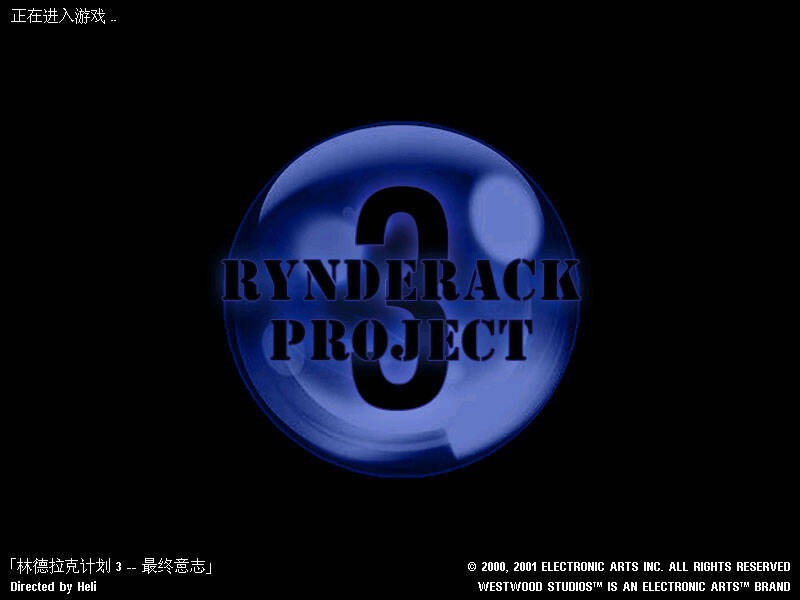
在制作时长两年半以后，「林德拉克计划 3：最终意志」终于来了！
这两年半大家都过得不容易。除了熬走新冠疫情以外，就我个人而言，我还经历了一次公司倒闭，并搬了3次家，体验了一把颠沛流离的感觉……咳咳，闹心的事就先不谈了。
如果说「林德拉克计划 2：命运之瞳」是继承林1的荣光的话，那「林德拉克计划 3：最终意志」就算是全新的尝试了。这部任务包仍然有一半多是大规模战役，同时我还在渐渐学习着去做一些单兵任务。在前半篇，我会主要试图在空军的一些玩法上取得突破，而后半篇则专注于AI盟友的设计。
对了，如果喜欢这部作品的话，一定要装上音乐包！音乐包里每一首音乐都是原创的，耗费的时间精力不亚于任务本体。
最后还是那句话：希望我能在与大家相处的这一段小段时间里，给大家带来快乐，这样我就满足了。
这部分是有关任务使用方法的章节。如果你是新人，请严格的按照此章节列出的步骤来使用；即使你是老玩家，也稍稍看一眼，没有什么坏处。在任务安装出现问题的时候，到这里来寻找解决方法也是明智的选择。
本章节中，你能找到下面的内容：
装载本任务包之前，你需要做好如下准备：
- 一个能够正常运行的红色警戒2尤里的复仇1.001版本游戏。最好是干净的原版，没有安装过其它任务包的。如果你能够确保你把以前的任务包清除干净（可以使用附带的清除任务包工具），那也是可以的。
- 「林德拉克计划 3：最终意志」的全部任务包文件。你可以对比在本节末尾的附录“文件列表”来检查你的任务包是否缺少文件。如果发现任务包文件损坏，请前往红警任务之家或者我的永硕E盘重新下载。
做好了这些准备，你就可以进行下一步的安装步骤了。
安装过程很简单：把任务包中的全部文件复制粘贴到红色警戒2尤里的复仇的安装文件夹（也就是gamemd.exe所在的文件夹）中，不要遗漏。
这样就安装完成了。
注意1：如果你面对的是一个干净的原版尤里的复仇的话，此时不应该产生任何文件重名冲突。文件重名冲突可能是因为安装文件夹中含有其它任务包的残留文件，为了「林德拉克计划 3：最终意志」能够正常运行，请选择覆盖。无法保证其它任务包的残留文件不干扰正常游戏。你也可以使用附带的“清除任务包工具”进行预先清理。不过，如果之前的游戏能够正常运行「林德拉克计划」的第一部或第二部，直接覆盖安装也是可以的。
注意2：由于在rules中采取了一些特别的手段，如果没有把rulesmd.ini正确的复制粘贴到游戏文件夹里的话，在第一关会直接弹框出错。这是正常现象，是为了提醒玩家确保安装正确而刻意而为。如果出现了第一关进入就弹框的现象，请再次检查：是否真的把全部文件都复制粘贴进去了。
注意3：请确保运行游戏的是尤里复仇1.001原版，不要使用Ares等拓展平台运行此任务。此任务包使用了很多原版平台的特性来达到一些效果，部分特性可能在Ares中被当成bug修复了。无法保证使用Ares运行本任务不会出现各种异常状况。
注意4：如果把expandmd99.mix重命名为expand99.mix，在尤里复仇1.000版本下也可以正常打开游戏。但不鼓励这种做法，因为本任务包并没有在1.000版本下经过严谨的测试。尤里复仇1.000版本已经被修复了部分bug的尤里复仇1.001版本所取代，最好通过安装补丁的方式升级到1.001版本，再安装任务包进行游戏。
如果仍然有疑难杂症没有解决，可以参考这篇文档：解决游戏无法运行等问题
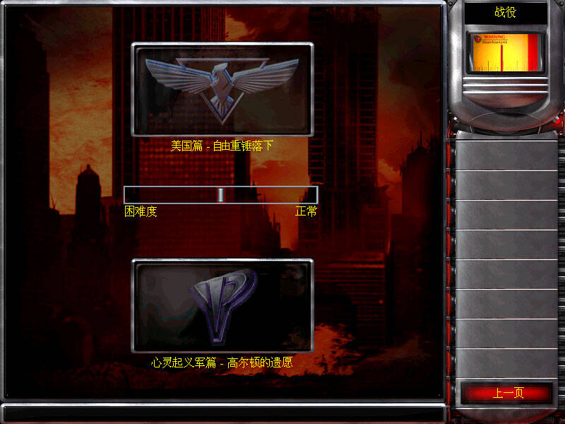
在新任务的界面可以看到，任务的入口名字发生了变化，这样基本可以确定安装完成，可以进行游戏了。建议先进行美国任务，再进行心灵起义军任务，因为二者在剧情上有前后衔接关系。
本任务包有难度分级，而且有明显的难度梯度，打法甚至都有不同的选择。
- 休闲 - 很容易就能过关的难度。基本没有为通关设置障碍。
- 正常 - 为一般玩家准备的难度。保留了基本的游戏机制，还是有点小麻烦的。
- 折翼/脑死 - 为挑战者准备的难度。在没有准备的情况下，攻略可能十分困难。
普通玩家请选择正常难度。
由于战场规模较大，推荐使用1280x720甚至更高的分辨率进行游戏，推荐使用16:9宽屏分辨率进行游戏。
但是不推荐使用4k以上分辨率进行游戏，否则在部分关卡，屏幕显示区域可能会超过整张地图的大小。
分辨率调节方法见：【玩家教程】如何调节红色警戒游戏运行分辨率？
下面列出这个任务包中包含的全部文件，以便出现问题时自查。一旦发现文件缺失，建议重新下载本任务包。
在“任务”文件夹下有一个清除任务包.bat。下面简述它的用途。
首先，它必须在游戏的安装文件夹下运行才能生效。在游戏安装文件夹之外的地方运行（实际上是找不到gamemd.exe），它会什么也不会做，以免误删有用的文件。
在游戏的安装文件夹下运行以后并按任意键继续，它能够干净的删除大部分基于原版平台的任务包或者未深度定制的MOD，得到一个干净的原版。它能够完全删除本任务包。
想要退出清理工具，单纯的关闭它的窗口即可。
在未安装本任务包之前，还可以先把它复制粘贴过去清理一下，这是另外一种用途。
它无法干净的清理基于NPatch系列（含NPExt）、Ares等拓展平台的MOD，也不要用它来清理这些MOD。
「林德拉克计划 3：最终意志」和谐包是与本任务包配套发布的一个可选补丁包。
鉴于最近部分平台网络信息审查风口较严，许多带有真实国家、地理信息的视频或者直播都惨遭封禁，即使这些信息根本没有错误（比如，即使使用国家自然资源部地图技术审查中心提供的标准地图，在涉及到藏南、新疆阿克赛钦等敏感地区时，都有可能无法过审）。为了以防万一、确保视频顺利过审，或者直播不被掐断，故推出这个补丁包，在任务包内部，抹去一切真实的国家与地理信息。
本补丁在任务包中以一个单独压缩包的形式附带。
使用方法：在安装「林德拉克计划 3：最终意志」任务包的本体以后，再将和谐包的文件解压到游戏文件夹中，覆盖原有的同名文件。以下是和谐包的所有文件列表：
本补丁包的使用范围仅限于游戏视频制作者和主播，自己玩游戏的普通玩家完全不必使用。
注：本任务载入图使用的地图中，已经抹去了国界的信息，仅保留海陆位置关系。藏南地区和阿克赛钦地区属于中国的事实不容动摇！
这部分是配套音乐包的说明。
本章节中，你能找到下面的内容：
「林德拉克计划 3：最终意志」包含了一个配套的音乐包，这样每一个任务都有自己的背景音乐。但是由于这个音乐包占空间很大（137.1MB），又不是任务运行所必须的，就和任务包分开下载了。
下载地址：
- 百度网盘下载 提取码：
ldlk
你也可以在网易云音乐中获取这个音乐包的在线歌单（歌单：「林德拉克计划 3：最终意志」）。
下面是来自网易云音乐的在线播放器：（在线播放器只显示前10首，以后可能失效）
和任务包的安装一样，只需要把音乐包解压缩得到的所有文件（包含thememd.ini和一堆.wav格式的音频文件）放到游戏文件夹下即可使用。没有打包成mix是出于通用性考虑。
你也可以在其它任务包中使用这个音乐包。
音乐包中，所有曲目均为作者竹蜻蜓（Heli）的原创曲目：
这部分是任务简报，在游戏中按下Tab键就可以看到，是关于各个任务背景故事、任务目标的简介。
- 美国 01 - 新世界 - 地点：韩国，仁川
- 美国 02 - 数据损坏 - 地点：美国，内华达州，死亡谷
- 美国 Ex - 未授权访问 - 地点：美国，内华达州沙漠
- 美国 03 - 见证人 - 地点：中国，天津，塘沽
- 美国 04 - 命运狂想曲 - 地点：日本，伊贺
- 美国 05 - 天守 - 地点：日本，大阪
- 美国 06 - 世纪挽歌 - 地点：澳大利亚，布里斯班
- 美国 07 - 注入（上） - 地点：美国，橡树岭
- 起义军 08 - 注入（下） - 地点：阿拉斯加，诺姆
- 起义军 09 - 反射体 - 地点：苏联，雅库茨克
- 起义军 10 - 脑电过载 - 地点：美国，波特兰
- 起义军 11 - 观潮者 - 地点：美国，圣迭戈
- 起义军 12 - 命运终止式 - 地点：罗马尼亚，塞贝什
- 起义军 13 - 星陨 - 地点：美国，肯尼迪航天中心
- 起义军 Ex - 弃子 - 地点：阿拉斯加，诺姆
- 起义军 Final - 永生之路 - 地点：美国，橡树岭
美国篇 - 自由重锤落下
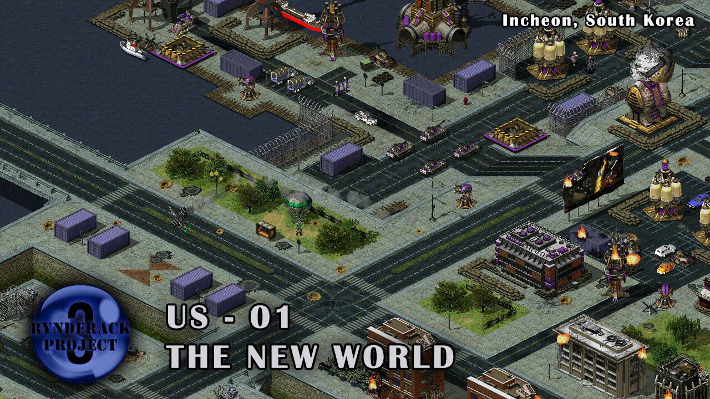
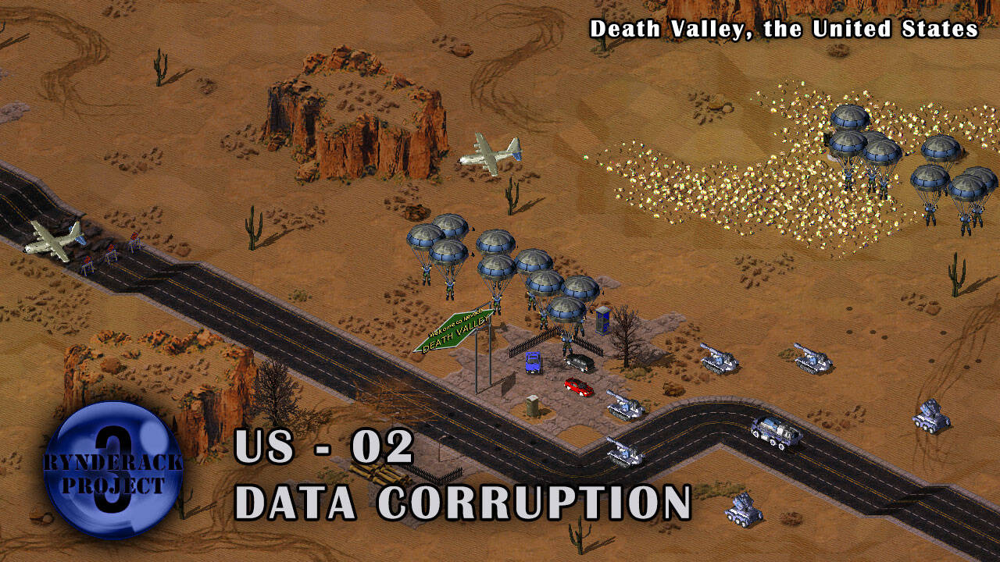
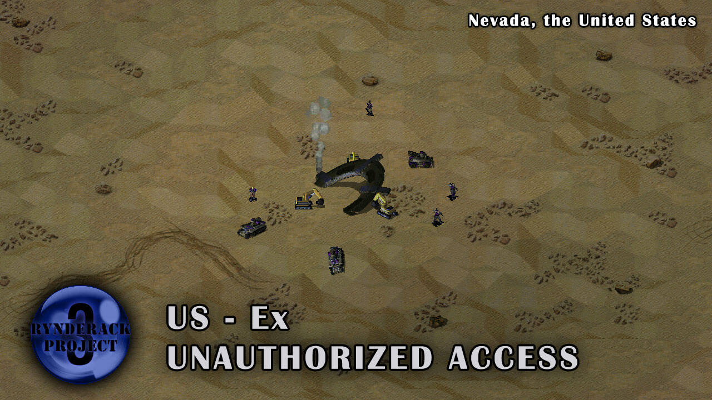
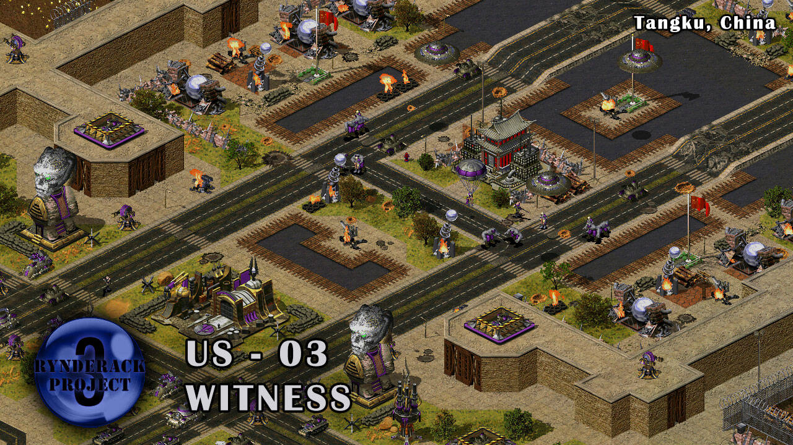
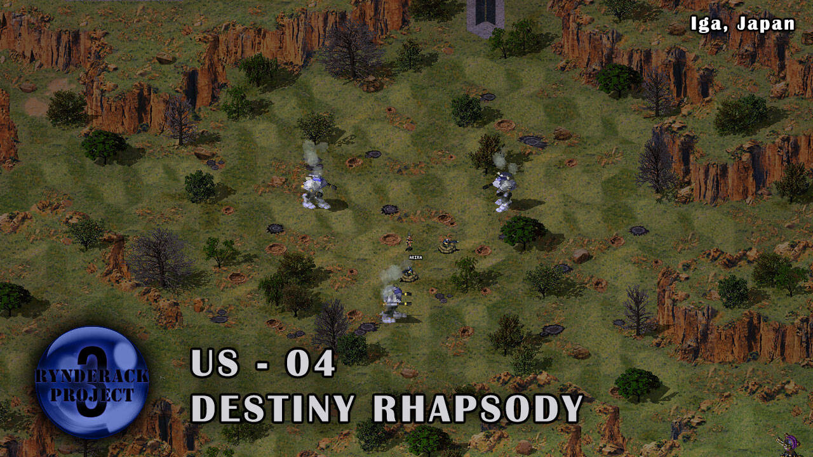
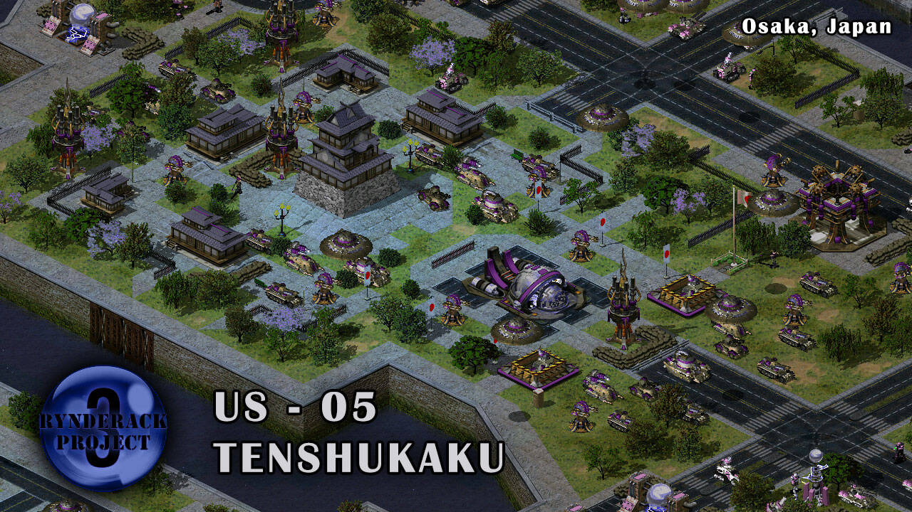
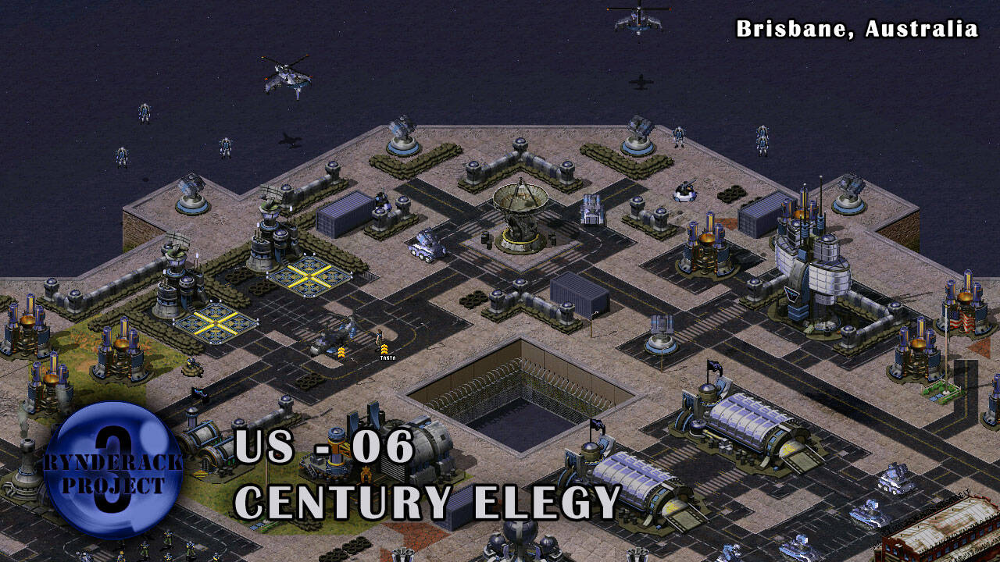
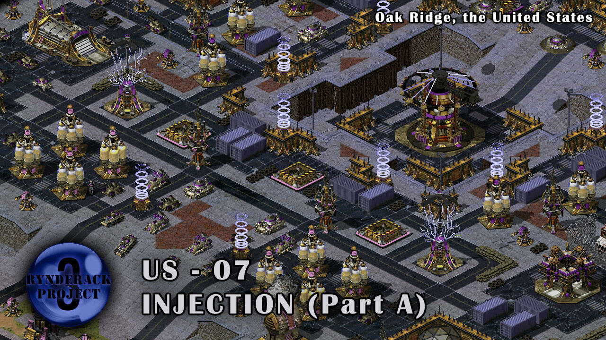
心灵起义军篇 - 高尔顿的遗愿
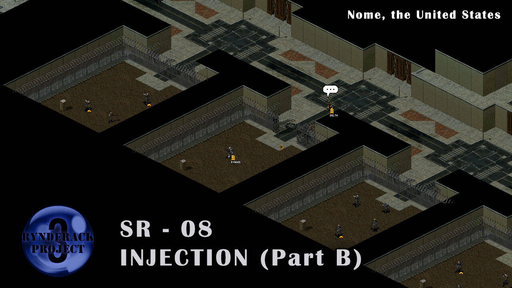
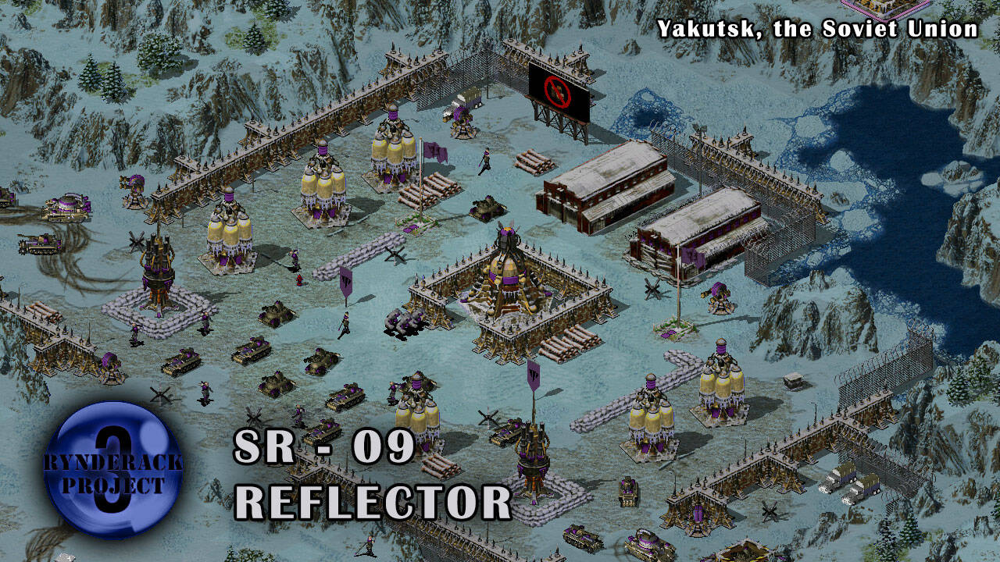
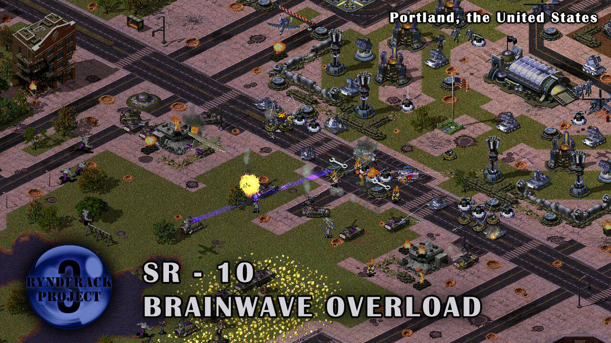
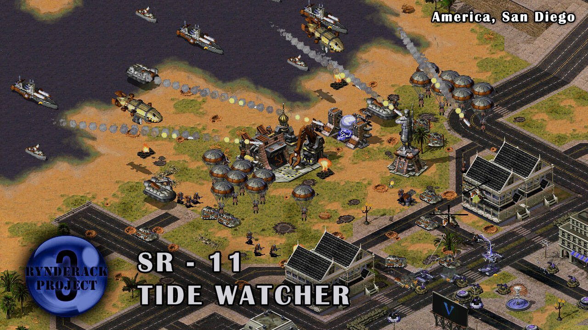
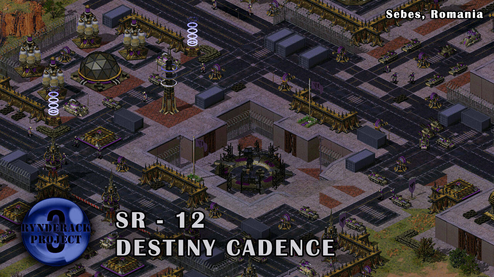
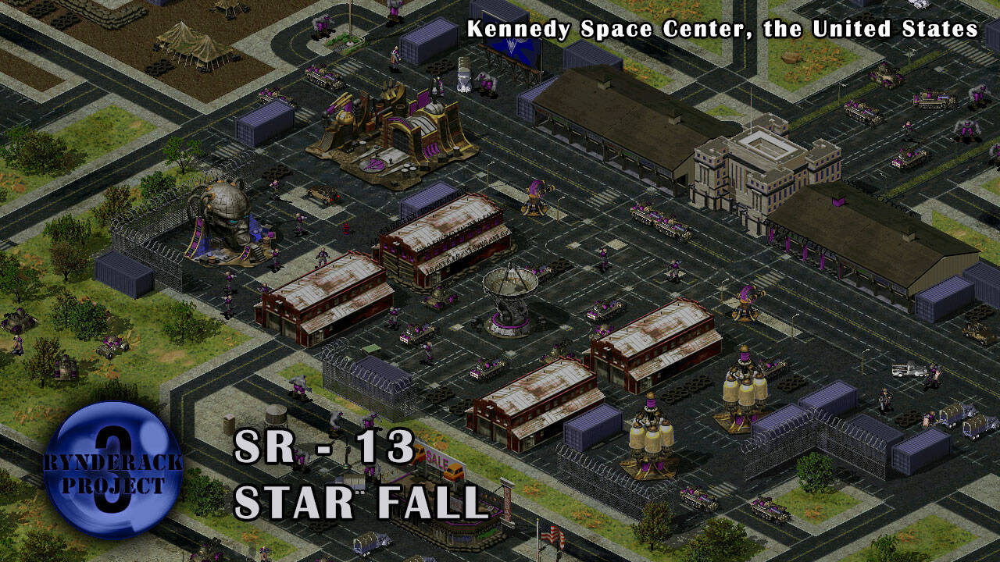
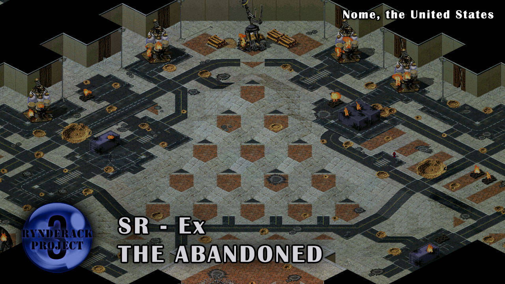
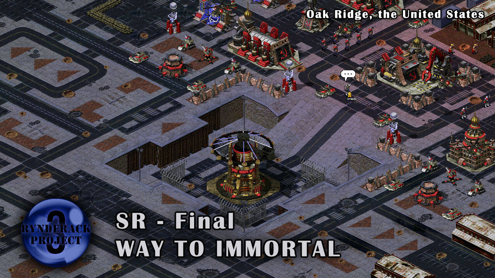
这部分是单位档案。大部分新增的物品可以在这里查到相关数据和背景资料。
本章节中，你能找到下面的单位/建筑/超级武器的背景资料：
- 空指部（美国）
- 泰坦机甲
- 北海巨妖
- 战列舰
- 静滞力场
- 萨拉托加炮艇机
- 暴风直升机
- 自由之锤
- 樱花无人自杀机
- 复仇女神轰炸机
- 卫星通讯站
- 被污染的遥控坦克
- 林德拉克
- 天枢
- 天权
- 塞瓦斯托波尔要塞炮
- 快中子注入装置
- 心灵部队
- 雌鹿运输直升机
- 征召中心
- 心灵探测器
- 试验体-德尔塔
- 试验体-西格玛
- 艾拉
- 心能尖塔
- 尤里雕像
- 意念压制塔
- 尤里改
- 混乱部队
- 命运之瞳
- 强运
- 计算主机
- 意念核心
- 心灵空投
空指部（美国）
属性：生产建筑物 / 机场
所属势力：美国、日本（科技共享）
停机坪数量：4
特殊效果：提供伞兵超武；其上停放的战机可以得到快速维修。
出场：美国01 - 新世界，及后续关卡。
美国拥有最精锐的空军，而相应地，也有最精英的地勤人员作为他们的坚实后盾。虽然没法在战斗中提供直接的帮助，但在战斗的间歇、飞机返回停机坪补充弹药时，地勤人员会对这些战机进行快速的维修。
泰坦机甲
属性：英雄 / 机甲
所属势力：欧盟、尤里（心控）、日本（山崎重工）、日本（笠原明驾驶）、最终意志（心控）
生命值：2000
武器：【依次使用】热能熔穿炮（对地） → 红箭飞弹 → 汲取光束（对建筑和车辆）
射程：7（热能熔穿炮） / 8（红箭飞弹） / 9（汲取光束）
特殊效果：其汲取光束武器会对整条线路上的敌人造成伤害，并回复其大量的生命值；本作中，泰坦机甲免疫混乱。
出场：美国04 - 命运狂想曲，及后续关卡；遭遇战随机工具箱
以希腊神话中巨人名字命名的重型战斗机甲。其搭载着欧盟多项试验性武器系统，比如汲取光束——可以瞬间汲取目标的能量与护甲，用于修复自身的护甲。这赋予了它无与伦比的持续作战能力。中国军队在名古屋的战斗中，挫败了尤里对其的量产计划，还遗留了一些失灵的机甲没有摧毁。在战争结束以后，笠原明将军指挥的日本军队正在寻找它们，并加以回收利用。
北海巨妖
属性：英雄 / 悬浮
所属势力：欧盟、尤里（心控）、最终意志（心控）
生命值：4000
武器：偏振子飞弹（对陆地及水面） / “触手”集束鱼雷（对水下）
射程：18（偏振子飞弹，最小射程5） / 14（“触手”集束鱼雷，无最小射程）
特殊效果：其在锁定敌人时攻击更加迅速；有距离10的反隐视野。
出场：起义军11 - 观潮者
以北欧神话中海怪名字命名的重型两栖作战单元。其搭载着四个涡轮驱动引擎、超远程的偏振子飞弹，和统治深海的集束鱼雷发射装置。其唯一一架原型机已经被尤里部队摧毁于雅典。
战列舰
属性：舰船
所属势力：欧盟
生命值：900
射程：15（最小射程1）
出场：本作未出场
前一代海军主力舰。随着航空母舰的服役，战列舰因为属性的全方位落后，而被扫入历史的垃圾堆，是为“巨舰重炮”时代的终结。然而面对尤里迫在眉睫的威胁，一切能够对抗敌人的武器都被启用，其中就包括这些尘封已久的战列舰。
静滞力场
属性：超级武器
所属势力：欧盟
充能时间：9分钟
释放建筑：起源科技实验室
出场：本作未出场。
欧盟开发的试验性超级武器。它利用大范围的静滞场，定向的阻止一切敌人机械的动力系统发挥作用。该超级武器对整个战场生效，一经释放，会立刻使战场上的全部敌人建筑失去作用、战车不能移动、飞行器立刻坠毁。
萨拉托加炮艇机
属性：战机
所属势力：美国、日本（科技共享）
生命值：250
护甲：重甲（注：除导弹类以外的大部分防空武器对此护甲伤害不高）
生产需求：空指部（美国） + 盟军战车工厂
造价：1600
武器：五连速射机炮（无限弹药）
射程：7
出场：美国03 - 见证人，及后续关卡。
拥有大载弹量的对地反装甲机炮的对地攻击机。萨拉托加炮艇机可提供持续的对地压制火力，并与轻型防空车辆正面对抗。在厚重的装甲保护下，它们可以一马当先，吸收大量的伤害，为友方空军突袭作掩护。
暴风直升机
属性：直升机
所属势力：美国、日本（科技共享）
生命值：250
生产需求：空指部（美国） + 盟军战车工厂 + 盟军作战实验室
造价：1450
武器：“胡拉坎”机载天气控制模块
- 制造龙卷风，对空中单位造成有效的范围伤害。
- 对防御塔等占地面积较小的建筑造成较高伤害。
- 对步兵造成较高伤害，但是对处于匍匐状态下的步兵效果甚微。
- 精英单位在持续攻击同一目标时，会追加更猛烈的天气效果：雷暴（对地）/大型龙卷风（对空）。
射程：7
特殊效果：可以通过部署指令快速落地。落地后不能攻击，但可以接受维修。
出场：美国04 - 命运狂想曲，及后续关卡。
先进空对空直升机，美国统治天空的重要保障。这种高科技直升机并未配备常规武器，而是通过搭载的小型化天气控制模块，制造龙卷风进行攻击——这种龙卷风对于飞行器通常都是致命的，也能压制步兵集群。气象武器虽然做不到手术刀一般的精确，但能造成大范围的杀伤。精英级别的暴风直升机能够输出更大的功率，制造破坏力更强的天气现象。
自由之锤
属性：战机
所属势力：美国
生命值：320
护甲：轻甲
生产需求：空指部（美国） + 盟军作战实验室
造价：2400
武器：五连地毯式轰炸（沿直线投下5组炸弹，每2组之间相距1格，第3组刚好命中预定目标）
特殊效果：敌方的地面防空武器对自由之锤的射程（大约）减2。
出场：美国06 - 世纪挽歌，及后续关卡。
重型地毯式轰炸机。作为美国空军传统的骄傲，自由之锤轰炸机能在高空对失去防空火力保护的敌人投下大量的炸弹，造成毁灭性的打击。
樱花无人自杀机
属性：战机
所属势力：日本
生命值：100
护甲：special_2
生产需求：空指部 + 控制中心 + 盟军作战实验室
造价：450
武器：死亡冲锋（主动向目标方向坠毁，并对砸中的敌人造成严重伤害）
出场：废弃单位，本作未出场
随着机器人控制技术的日趋完善，这种科技含量不低、但是价格低廉的小型无人机在日本防卫部队之中得到了大规模的部署。任何敢于威胁日本本土的敌军部队，都会在还没有看到任何敌人士兵之前，就受到铺天盖地的无人机蜂群威胁。这些不起眼的小玩意能在战场上干很多事：侦查、攻击、快速反应，最重要的是，不会损失任何一名宝贵的飞行员。
复仇女神轰炸机
属性：战机
所属势力：美国
武器：共振热能飞弹
生命值：400
生产需求：空指部（美国） + 盟军作战实验室 + 【渗透】尤里作战实验室
造价：2000
出场：美国01 - 新世界，及后续关卡。
因为心灵技术的广泛使用，尤里的部队大多使用小型的意念强化装置进行脑电波通讯，而非传统的无线电通讯。脑电波通讯或许拥有更高的安全性，但在合适的时候也会成为他们致命的弱点。在解读了尤里残部的脑电波通讯频率后，我们终于可以派出将敌人的部队“一键删除”的试验型武器——复仇女神轰炸机。这种重型战斗机携带的共振热能飞弹可以锁定敌人的脑电波频率，并通过共振释放能量，将他们的脑子统统烧成灰。
卫星通讯站
属性：建筑物
所属势力：美国、最终意志（占领）
生命值：1000
护甲：混凝土
出场：美国06 - 世纪挽歌、起义军13 - 星陨。
在得到来自天枢的部分攻击代码以后，笠原明提出了“通过将精心设计的电波信号通过卫星向全球高功率广播，对所有尤里残留的类似设备进行无差别代码注入”的大胆计划。而这些能够将大量加密信息上传到忒伊亚卫星系统的地面通讯站，就成为了计划的关键。
被污染的遥控坦克
属性：车辆/悬浮
所属势力：美国
造价：600
护甲：重甲
生命值：180
武器：辐射聚焦炮 / 病毒胶囊（交替攻击） / 放射性沾染（被摧毁时）
射程：7
特殊效果：可以两栖；可以移动中攻击；免疫辐射、心控、混乱、病毒；无法攻击建筑物
出场：彩蛋
遥控机器人被广泛的运用于危险物品的研究，遥控坦克也不例外——这种无人机本应该被用于最危险的研究设施的安保工作，直到它们受到了泄漏的实验材料污染，摇身一变而成为了最致命的武器。至于这些研究设施在研究什么，没有人在意了……
林德拉克
属性：英雄 / 步兵
所属势力：苏联、心灵起义军（暂时加入）
生命值：250
武器：聚能射线枪
射程：9
特殊效果：免疫毒气、辐射。
出场：起义军08 - 注入（下）、起义军09 - 反射体、起义军13 - 星陨、起义军Final - 永生之路
林德拉克是苏联铁幕计划的负责人，尤里最棘手的敌人。前一次，尤里的计划几乎成功了，只因为林德拉克在敖德萨启动了4座铁幕装置，并率领黑海舰队杀出重围，最终把尤里赶到月球基地，不得不启用时间机器。如今时间轴纠正，时间回到了一年前，尤里自己心中也明白，自己心中的一切计划，林德拉克都已经看过了。
天枢
属性：英雄 / 步兵
所属势力：中国
生命值：200
武器：静滞射线（对车辆） / 黑客入侵（对建筑）
射程：15（静滞射线） / 2（黑客入侵）
出场：？？？
天枢是一名中国的黑客特工。因为其与“境外势力”林德拉克关系密切且多次擅自行动，被上级不信任并严密监视。虽然并不日常携带枪械，但其出众的黑客技术，使他在战场上成为了一个强力的渗透者和破坏者。
天权
属性：英雄 / 车辆
所属势力：中国
生命值：250
护甲：special_2（反步兵武器和反坦克武器都会对其造成有效伤害）
武器：SVD步枪（对步兵） / 巡航导弹标记（对车辆与建筑）
射程：9（SVD步枪） / 18（巡航导弹标记）
召唤物数量：6（无军衔、老兵） / 9（精英）
占用的装载体积：2（Tip：可被装入雌鹿运输直升机或者防空履带车）
特殊效果：一旦召唤的巡航导弹锁定了攻击目标，天权就不必保持锁定目标的状态了；无法被铁幕保护，而且会被铁幕秒杀；免疫毒气。
出场：美国03 - 见证人、起义军11 - 观潮者、起义军Final - 永生之路
天权是一名中国的突击队员，天枢的兄长。不同于热爱黑客技术的弟弟，他青年从军，一直服役于最忠诚的边防部队，从事最危险的任务，也没有太多工夫和弟弟联系。天权通常驾驶轻型载具冲在战场的最前线，使用手中的步枪对敌人进行精准的射击。虽然天权本人难以对付重型目标，但他有权限呼叫战术打击，为巡航导弹阵列标记打击位置。
毛毛
属性：英雄 / 步兵 / 非人类
所属势力：中国
生命值：150
武器：狗咬
特殊效果：免疫其它警犬的扑咬；可以自动回复生命。
出场：起义军Final - 永生之路
毛毛是天枢的爱犬，也是兄长从军以后他身边最好的伙伴，陪伴他度过了最难忘的青年时代。毛毛随时准备好保护自己的主人，精湛的战斗技巧使得它在与其它恶犬的战斗中总能占据上风。
塞瓦斯托波尔要塞炮
属性：地标建筑物 / 防御建筑物
所属势力：苏联
生命值：1200
射程：25
出场：本作未出场。
位于乌克兰塞瓦斯托波尔要塞的古老大炮。虽然是二战遗留下来的、很过时的武器，但在林德拉克防守尤里对这座城市的进攻时，被重新启用。它的每一声轰鸣，都会让整座城市为之颤抖。
快中子注入装置
属性：地标建筑物
所属势力：中国
生命值：1000
出场：本作未出场。
中国绵阳核子研究中心的核心设施。这些装置通过快中子增殖反应，能将含铀-238的贫铀转化为核武原料钚-239。尤里对这些设施已经垂涎已久了，但中国人坚决不会让它们落入敌手的。
心灵部队
属性：步兵
所属势力：中国
生命值：100
生产需求：苏联兵营 + 苏联作战实验室
造价：1200（起义军Final - 永生之路 中为800）
出场：美国03 - 见证人、起义军10 - 观潮者、起义军Final - 永生之路
虽然中国和尤里之间的不公平交易终止了，但这已经不妨碍中国人使用已经得到的部分心灵技术训练自己的心灵部队了，可谓“以其人之道还治其人之身”。虽然由于技术的不完善，需要花费更多的时间和金钱，但这已经足够了。
雌鹿运输直升机
属性：直升机 / 运输单位
所属势力：中国、苏联（科技共享）
生命值：225
载员数量：3（装载体积限制：2）
生产需求：苏联雷达 + 苏联战车工厂
造价：1200
特殊效果：可以缓慢的自我修复；落地和悬停状态不主动攻击敌人和反击，但是接受巡逻或者移动攻击指令的时候会进行主动攻击。
出场：美国03 - 见证人、美国05 - 天守、起义军10 - 观潮者、起义军Final - 永生之路
苏联人和中国人使用这些运输直升机来进行跨地形的步兵投放或者货物的吊运。虽然难以承载大量部队的空投任务，但简单实用的性能，对于特种部队的小规模机动已经足够。
征召中心
属性：生产建筑物 / 资源强化
所属势力：中国
生产需求：苏联建造厂 + 苏联兵营 + 苏联作战实验室
造价：800
特殊效果：每座征召中心使步兵造价+50%，但是从兵营中训练的步兵会同时在征召中心中训练。
数量限制：3
出场：美国03 - 见证人、美国05 - 天守、起义军10 - 观潮者、起义军Final - 永生之路
中国通过征召民兵来更快的训练步兵。随着备战的全面发动，“全民皆兵”的状态开始，共和国的敌人将很快陷入人民战争的汪洋大海。
参考数据：
- 1座征召中心：生产速度200%，总价150%，单价75%。
- 2座征召中心：生产速度300%，总价225%，单价75%。
- 3座征召中心：生产速度400%，总价337.5%，单价84.375%。
心灵探测器
属性：防御建筑物 / 雷达
所属势力：中国
生产需求：苏联建造厂 + 苏联作战实验室
造价：1000
特殊效果：探测周围半径15范围内敌人的动向。
出场：美国03 - 见证人、美国05 - 天守、起义军10 - 观潮者、起义军Final - 永生之路
在复刻了超能力部队的训练技术以后，中国人又重构了尤里的心灵探测技术，并将其用于探测尤里部队的动向，尤其是神出鬼没的雷鸣攻击潜艇。
试验体-德尔塔
属性：英雄 / 步兵
所属势力：尤里（曾经），心灵起义军
生命值：600
武器：心能汲取 / 心能重组
射程：5.25（心能汲取） / [范围攻击半径]3.5（心能重组）
特殊效果：在使用主武器“心能汲取”攻击以后，会在自身位置发动副武器“心能重组”，少量恢复周围步兵和坦克的生命值；主武器“心能汲取”可以清理坍塌的斜坡。
生产需求：尤里兵营 + 心灵感应器 + 尤里作战实验室
造价：1500
出场：起义军08 - 注入（下），及后续关卡
作为试验体，他生来就没有名字，只有一个编号：“德尔塔”。尤里在他的身上投入了相当多的努力去对他身上的心灵能量进行增幅，然而这部分提升并没有体现在破坏力上——反而是，他总会抑制不住体内涌动的力量，去无意识的对周围的物品进行修复。因此，他被视作一个失败的试验体，封存在诺姆地下实验室。
试验体-西格玛
属性：英雄 / 步兵 / boss
所属势力：尤里（曾经），最终意志
生命值：13500（boss战）
武器：小型心灵能量球 / 大型心灵能量球 / 蓄力心灵爆破
射程：11（小型心灵能量球）/∞（大型心灵能量球） / [范围攻击半径]3.5（蓄力心灵爆破）
出场：起义军Ex - 弃子
目前仅存的两个试验体之一。关于他的情报我们知之甚少。试验体-德尔塔似乎对他有所了解，但一旦谈起这个话题也讳莫如深。
艾拉
属性：英雄 / 步兵
所属势力：尤里（曾经），心灵起义军
生命值：150
武器：病毒狙击枪 / 远程狙击模式
射程：14（病毒狙击枪） / ∞（远程狙击模式）
特殊效果：免疫心灵控制、混乱和病毒；“远程狙击模式”仅对试验体-西格玛召唤的心灵能量球生效。
出场：起义军08 - 注入（下）、起义军12 - 命运终止式、起义军Ex - 弃子、起义军Final - 永生之路
精英病毒狙击手，心灵起义军的领袖人物之一，主导了心灵起义军与自由欧盟（欧盟在尤里统治区的反抗部队）的合作，和欧盟的威灵顿将军有很多来往。
德古拉要塞一战中，艾拉曾派遣了大量病毒狙击手伏击在尤里的撤退路线上，但尤里在其教徒的指导下仍然迅速穿越了危险区域，闪电般的逃脱。自此，艾拉认识到了自己和尤里教徒之间的深刻差距，于是继续转入地下活动，试图为心灵起义军寻找一名更优秀的领袖。
心能尖塔
属性：建筑物 / 维修工厂
所属势力：最终意志，心灵起义军
生命值：1200
维修半径：3.5
特殊效果：每隔10.67游戏秒，恢复周围空中单位50生命值，不分敌我。提供尤里基地车的建造前提。
生产需求：尤里建造厂 + 尤里战车工厂
造价：1000
出场：美国07 - 注入（上），及后续关卡
理论上，试验体-德尔塔的“心能重组”可以成为很好的战场支援力量。然而，目前所制造出的人工大脑尚不能完美的控制这种重组性的心灵能量——在遇到地面时，能量波会发生大面积的强烈反射，形成预期以外的干涉波，产生破坏性的效果。因此，这种心灵能量波仅被用于从心能尖塔的顶端导出，用于在空旷的环境中对空中单位进行修复。
尤里雕像
属性：防御建筑物
所属势力：尤里，最终意志，心灵起义军
生命值：1200
武器：尤里之目
射程：15
生产需求：尤里建造厂 + 心灵感应器
造价：2000
出场：美国01 - 新世界，及后续关卡
高耸入云的尤里雕像是尤里意志的象征。它可以用“目光”从远距离灼烧敌人。
意念压制塔
属性：防御建筑物
所属势力：最终意志，心灵起义军
生命值：1200
武器：意念压制
射程：10（伤害半径）
生产需求：尤里建造厂 + 心灵感应器 + 尤里作战实验室
造价：2000
出场：美国05 - 天守，及后续关卡
这种闪烁着不祥电光的防御塔是相比心灵控制塔更加危险的存在。它虽然不能一瞬间给敌人造成损失，但可以向周围大范围持续释放心灵能量，缓慢的侵蚀敢于靠近的所有敌人。在它的面前，人海战术是没有意义的。
尤里改
属性：步兵 / 两栖
所属势力：尤里，最终意志，心灵起义军
生命值：150
武器：远程心灵控制（对步兵及车辆） / 强力心灵震爆（部署时发动）
射程：9（远程心灵控制） / 0（强力心灵震爆）
生产需求：尤里兵营 + 心灵感应器 + 尤里作战实验室
造价：1350
出场：美国01 - 新世界，及后续关卡
比起粗劣的尤里复制人，尤里改是尤里本人心灵力量更加精确的复制体。虽然离尤里本人还有一小段差距，但他们已经能做到使用心灵力量悬浮在空中，或者从更远的距离控制敌人的心智。
混乱部队
属性：步兵
所属势力：最终意志，心灵起义军
生命值：150
武器：混乱气流喷射
射程：6.5
特殊效果：免疫混乱、免疫病毒；其喷出的混乱毒气只有在水平地面才能正常命中目标。
生产需求：尤里兵营 + 心灵感应器 + 尤里作战实验室
造价：700
出场：起义军08 - 注入（下）、起义军10 - 脑电过载，及后续关卡
相比神经突击车，混乱部队是更加稳定的混乱制造者，虽然他们仍然是战场上的不稳定因素。除了让敌人陷入自相残杀的状态以外，混乱部队喷射的毒气还可以渗入建筑，从内部对建筑造成有效的破坏。
命运之瞳
属性：英雄 / 飞行器
所属势力：尤里，最终意志，心灵起义军
生命值：1600
武器：远程心灵控制（对步兵及车辆，可对空） / 究极心灵震爆（对建筑，或者部署时对正下方发动）
射程：9（远程心灵控制） / 3（究极心灵震爆）
特殊效果：其武器有7层充能，每一层充能都可以用于快速的释放远程心灵控制或者究极心灵震爆，虽然充能很慢；其每一次心控敌方单位时，都会获得可观的生命值回复；其最多同时心控26个敌方单位。
出场：美国04 - 命运狂想曲、美国06 - 世纪挽歌、美国07 - 注入（上）、起义军08 - 注入（下）、起义军12 - 命运终止式、起义军Final - 永生之路
命运之瞳曾经是尤里真正的王牌，一座飞行的心灵控制器。随着尤里“命运之瞳”计划的破产并命陨北极，这一项决战武器的资料也被各国封存，仅作为最高机密用于针对性武器的研发。不过，天知道有没有人在地球的某一个角落，对这一毁灭性的庞然大物进行量产呢。
强运
属性：超级武器
所属势力：心灵起义军
充能时间：10分钟
释放来源：命运之瞳
效果：使命运之瞳进入高速回复生命值的状态，持续30秒。
出场：起义军12 - 命运终止式、起义军Final - 永生之路
命运，仅仅是无数概率事件的组合而已吗？也许在心灵能量足够强的时候，就足够扭转命运的流向，在最危难的时刻爆发出惊人的战斗力。活下去，自由世界还需要我们！
计算主机
属性：建筑物
所属势力：最终意志，美国（占领）
生命值：1000
出场：美国01 - 新世界，及后续关卡
世人才刚刚发现，这些尤里遗留下来的超级计算机阵列遍布世界的各个角落。在其中的数据解密之前，没有人知道其中蕴藏着什么样的计划。
意念核心
属性：建筑物 / 超级武器
所属势力：最终意志
生命值：2000
出场：美国07 - 注入、起义军10 - 脑电过载、起义军Final - 永生之路
特殊效果：其可发动超级武器“意念增幅”。每次“意念增幅”都会使全场的己方单位生命值×1.2，此效果可以多次叠加。
尤里位于橡树岭基地核心的大型装置。其散发着强烈的心灵能量，但又与“心灵控制器”的支配性能量不同。没有人知道谁会用那座装置做什么。
心灵空投
属性：超级武器
所属势力：心灵起义军
充能时间：4分钟
释放来源：尤里作战实验室
效果：通过伞降方式投送2名心灵突击队。
出场：起义军10 - 脑电过载，及后续关卡
患难之中，心灵起义军与美国军队迅速达成了这样一项合作：心灵起义军提供从尤里阵营继承的技术训练超能力部队，而美国军队则为受训人员装备威力强大的C4炸药，并通过伞降将他们送入战场。
这部分是通关提示，感到困难时再来看哦。
最高难度（折翼/脑死）难度的通关是较为困难的。以下所有通关提示适用于折翼/脑死难度，休闲和正常难度下可能有更优的打法。
本章节的所有打法均为作者本人与制作组经反复测试以后形成的稳定打法，经过多次通关验证，在可行性和稳定性方面可以不用怀疑。但在任务发布以后，可能会有人开发出更优的打法，这部分内容在制作期间完全不可预料，因此也不可能写到文档里——如果你发现了更简单但是文档中没有收录的办法，并不意味着作者在本章节有意误导，只是作者和测试组在有限的测试期间都没有发现这种打法而已。
另外，鉴于对“稳定打法”的追求，本章节提供的通关提示不会考虑以下操作：
- 利用（在对战中会破坏平衡性的）恶性游戏bug。
- 高频次的反复存读档（赌运气）。
（如果你使用了这些操作，你可能开发出更优的打法）
在本篇文档中，将使用“难度六维图”而非以前的“星级”来对任务的难度进行多角度的评价。这种评价方式会更加全面的反映任务的特点，也方便玩家对自己的短板有一个清楚的认知。
以下是各个维度的介绍：
- 正面强度 —— 反映了敌人实力与己方的对比。如果敌人有猛烈的进攻，或者坚不可摧的防线，或者强烈的科技压制，此项的评级都会提高。
- 时间紧迫性 —— 反映了限时或者变相限时机制留下的富余度。此项评级较低时，玩家可以以逸待劳，甚至优哉游哉的完成任务；反之，则必须抓紧时间，快速发展。
- 多线强度 —— 反映了需要在多条战线之间切换的频率。如果战场区域非常大，或者单条战线很长，也会增加此项的评分。
- 流程长度 —— 反映了熟练的按照标准流程完成所有任务目标所需要的时间。评级越高，玩家就越可能经历长时间的持续战斗。
- 微操需求 —— 反映了对单位微操的需求程度。如果仅仅靠爆兵堆数量就能很轻松无脑过关，则此项评分会降低。
- 战术复杂性 —— 反映了所需要实现战术的复杂程度。对于此项评级高的任务，玩家可能需要经过多次探索尝试、设计较为复杂的战术才能够顺利通关。
美国 01 - 新世界
这个任务分为突袭、防守、反攻三个阶段，算是一个热身任务。
小队突袭阶段：按照提示推进
此阶段基本不会遇到心控单位，利用好维修车，尽量不要减员。多功能步兵车可以装美国大兵提升伤害。注意利用好坦克杀手肉盾的作用，它可是这个阶段最抗打的坦克。
关于桥头的粉色基地，在操作有余力的前提下可以选择去迅速摧毁，这样会为后续反攻带来方便（一旦这个基地后来发展起来，需要很多部队才能攻下）。但发现自己没有能力摧毁时，就不要进行任何纠缠，直接过桥即可。占领其生产建筑会导致右上角紫色的敌人开始进攻，一般不建议这样做。
过桥时的雷鸣潜艇很难缠，桥周围还有防空，很难用过桥以后拿到的飞行兵进行压制。雷鸣潜艇会锁定第一个进入其射程的目标，控制好仇恨，快速通过即可。过桥以后的路程就没有任何难度了，慢慢清理，夺回机场，进入防守阶段。
防守阶段：阵地防御
黑鹰战机一共会送3组，每组8架，一共24架黑鹰战机——所有雷鸣潜艇，以及大部分的精神控制车、磁电坦克都由黑鹰战机来处理。如果你熟悉敌人的登陆线路，可以使用黑鹰战机直接击沉敌人的登陆艇阻止其登陆，减轻地面部队的压力。海豹突击队出一点，进入多功能步兵车可以有效的对付病毒狙击手。其余的敌人通过步兵即可拦截。
也可以以驻军楼房为支点进行防守。此时需要小心的就是从北侧靠近的雷鸣潜艇，它们会炸毁房屋。需要及时使用黑鹰战机或飞行兵进行处理。
反攻阶段：常规盟军单位进攻
敌人的陆军进攻只从一座桥过来，去堵桥头就可以高枕无忧。海军和空军比较难缠，防空不仅是防飞碟，还要防雷鸣飞弹，尤其是上方的油井可能被雷鸣潜艇导弹轰炸。不过敌人总体进攻强度不高，可以安心发展。
可以选择出一些海军，然后让陆军部队全程在海边行进。这样的好处是可以借助航母的远程攻击和神盾巡洋舰的优质防空。
如果在小队突袭阶段没有摧毁桥头的粉色基地，建议反攻时出大量海军进攻，用航母将其炸平。然后尝试在桥头建立基地，采那里的矿解决经济问题。可以用送的黑鹰战机直接一波把敌人的建造厂换掉，然后出大量的光棱坦克收拾残局。
总结：本关流程较长，但是节奏不快、资源充足，可以慢慢打。
美国 02 - 数据损坏
这是一个有着复杂限时机制的进攻任务。可以选择无脑正面快攻，也可以选择侧面突袭直接截断数据传输。
正面快攻：光棱坦克横扫全场
守家按照提示简单做一做，然后就可以拉基地车去开左下角的矿，或者去地图左中提示的油井位往下方延伸，然后把资源全部用于出光棱坦克。
由于本关敌人只有T2科技，没有精神控制车和飞碟，全是脆皮地面单位，因此光棱坦克群在本关近乎无敌。只要不被神经突击车近身、不被磁电坦克持续消耗，足够数量的光棱坦克可以一路平推过去。本任务包中削弱了光棱坦克的溅射对关键建筑物的伤害，你完全不必担心光棱坦克的溅射伤害把任务目标打爆（这应该不算削弱，算增强）。
计算主机C和D附近的防御都比较严密。计算主机C附近神经突击车多，应该一步一步小心前进；计算主机D附近磁电坦克多，应该避免消耗，攒大量光棱坦克将其一波冲垮。
侧面突袭：空降截后，中断计时
此方法主要针对正面推进有困难的玩家，但需要做双线防守。
因为占领计算主机D以后数据的传输就会停止，相当于限时被取消了；而地图右上角有2个油井。因此，如果占领那2个油井并就地发展，就可以以此为支点直接跨过计算主机A和B，直接攻击计算主机C或D。
需要使用黑鹰战机清理山上的防空，然后用夜鹰直升机带工程师占领右上的油井。油井处的防守模式和主基地的防守模式基本一致，主要是直升机送步兵上高地，借高地防守。也可以配合一些幻影坦克、光棱坦克、防御塔等。
进攻的时候同样以光棱坦克为主，但这次的进攻距离非常近。可以先打掉计算主机D旁的战车工厂阻止敌人持续出兵，敌人的围墙可以作为光棱坦克的掩体。这种进攻路线时间极为充裕，而且一旦攻占计算主机D，相当于没有限时了，后面都可以慢慢打。
总结：本关虽然限时，但时间较为充裕，敌人也只有T2科技。即便如此，尤里科技T2的压制力也不容小视，对你的基本功有一定的考验。
美国 03 - 见证人
这是一个”推车“任务——你需要为天权扫清前进的道路，天权虽然不归属你操纵，但他遇到敌人就会停下。由于天权有一定的自保和推进能力，盟友也会帮忙进攻，因此本关几乎唯一的失败条件就是超时。
新单位萨拉托加炮艇机的主要定位是“吸收伤害”和“反坦克”。它可以轻松的顶着防空火力消灭盖特坦克，也可以冲在黑鹰战机前面吸收伤害（但是它真的很怕飞碟，真的）。萨拉托加炮艇机不用造太多，空军的主力输出还是黑鹰战机和飞行兵。
由于本关所有的友军进攻都是由天权走到特定的地点唤起的，因此你需要抢节奏、尽可能的在初期就把天权往前推，以尽早的获得友军支援，让节奏滚雪球式的加快；另外你初始的小岛与推进路线被水路分隔不能互通，资源也很贫瘠。如果试图在这个小岛憋一大波部队再出门，基本就等于放弃了友军支援，独自扛下了全部推进任务。
本关推车的流程大概可以分为三个阶段：
第一阶段：左侧城区→前哨站：以空军压制为主
这个区域防空不多，可使用萨拉托加炮艇机大胆的探开视野，并摧毁巡逻的坦克。可以在城区降下伞兵进驻建筑协助推进，但切记伞兵不是推进主力，不要在他们身上浪费太多时间。使用黑鹰战机（每组最少5架，保稳可6架）逐个点杀盖特机炮，直到盟友推进到前哨站。
第二阶段：港口→粉色基地：可以选择趁机登陆，也可以纯空军打下去
注意港口的2架飞碟限制了萨拉托加炮艇机的行动，需要使用飞行兵点杀。空军推进的基本战术是：使用萨拉托加炮艇机探路，黑鹰战机/萨拉托加炮艇机点杀所有防空塔/防空车，飞行兵从后面跟进收割其余地面单位。此阶段可以趁机登陆，送一辆基地车到左侧前哨站的位置并转型陆军；如果打算不使用陆军，则把余钱全都按成飞行兵：使用黑鹰战机+飞行兵也可以完成后续的推进。
第三阶段：大路→要塞门口：盟友的加入加快了推进速度，但要塞门口还需要帮忙
盟友会出V3火箭、基洛夫、雌鹿直升机等单位进攻，基本不会因为单位被心控而帮倒忙。可以借助盟友的基地拓展建造范围转陆军，出光棱坦克推进；或者建造机场，把飞机转场到这里，轰炸距离更近。如果打到要塞门口时还保有充足数量的黑鹰战机，可一次冲锋换掉门口的尤里基地，这样可以终止讨厌的建筑重建。
运营问题
一般来说4~5机场的黑鹰战机就足够使用了。本关对科技需求比较慢，初期都是T2空军在打，作战实验室可以缓出。家中防守可以靠大量（5个以上）爱国者飞弹塔来完成（本关是进攻关，不需要防线固若金汤），有空腾出飞机去点一下雷鸣潜艇就行。
如果想要爆出大量飞行兵，仅靠本岛的矿是不够的，可能还需要去开右侧的岛矿（会有雷达视野提示）。后期随着盟友海军的推进，这个岛也会被盟友清理出来，但如果需要抢节奏的话可以先拿。
总结：本关应该是美国篇的第一个劝退关……在没有正确的思路时，有可能迷茫的耗到时间结束。
美国 04 - 命运狂想曲
这是一个小队防守反击任务。由于山路崎岖难行，经济持续紧张，应该使用陆地精兵+空中精兵推进，甚至使用纯空军过关。
本关解锁新单位暴风直升机，主要定位为机动制空、反步兵群。注意：虽然大量暴风直升机在面对盟军和尤里科技的敌人时几乎可以轻松撕碎一切，但它数量不足的时候是没有这种效果的——因此，在前期经济紧张的时候，不应该大量的生产暴风直升机。多练几个精英IFV不香嘛？（虽然暴风直升机升级至精英以后也是强到离谱……为此，在开头的小队作战阶段，可以把经验尽可能分给初始部队的3架暴风直升机）
泰坦机甲选择问题：对下一关的打法影响比较大，但不会明显影响难度
- 热能炮损坏的泰坦机甲（左上）：拥有最强的防空能力，但是对地能力弱了不止一点半点，主要是失去了先手开火权。不过由于美国篇全程缺陆地防空，其实我个人觉得选这个最好。
- 红箭飞弹损坏的泰坦机甲（右上）：防空能力废了，对地火力输出基本不变。幻影坦克直接退役。在下一关有神奇的效果，指可以使用空军将失控的泰坦机甲溜得团团转。
- 汲取光束损坏的泰坦机甲（下）：火力强大，但失去了自我回血能力，从此成为必须要维修IFV跟着的残废。对某个单兵关（指美国07隐藏路线）影响很大。
防守阶段：四面都需要守，先做静态无损防御
在消灭盟军的空军基地之前，敌人会在基地的四角随机空降伞兵，所以各处都要防。可以利用暴风直升机、飞行兵的机动性，以及海豹部队IFV的快速清兵能力解决。
敌人进攻的陆军和空军分别可以使用幻影坦克和IFV解决。注意：敌人也会出动炮艇机锁定我方车辆单位，但不要用IFV与炮艇机硬碰硬，用带防空的泰坦机甲或者暴风直升机、飞行兵解决。
由于本关经济不足以支撑持续爆兵进攻，需要做无损防御，防御稳定以后再使用防御期间练的精英部队进攻。
进攻阶段：以泰坦机甲为核心的陆军精兵出门，或者纯空军解决问题
敌人会出大量的飞碟进行进攻和巡逻，我方部队只要一出门就会被敌人飞碟锁定甚至追着打，到地图上半区域更是会出现被8架以上的飞碟围攻的情况。因此我们要确保我方的防空能力要完全压制住敌人的空军，我方才能聚集脆弱的光棱坦克或者黑鹰战机远距离奔袭。这种思路我称之为“抢制空”，而带有防空能力的泰坦机甲，以及暴风直升机，都是可以实现“抢制空”的单位。
可以使用泰坦机甲带光棱坦克出门，配合暴风直升机辅助防空进行进攻；也可出大量的暴风直升机，配合黑鹰战机进行进攻（如果能抢夺更多的机场，这种打法会更加的有效，尤其是用黑鹰战机直接点杀泰坦机甲）。
总结：本关节奏相当平缓，只要攒出足够的精英部队，通关不是难事，但对于速通来说提了个大难题。
美国 05 - 天守
这是一个机制复杂的任务，你需要保护（几乎肯定会）被敌人心控的泰坦机甲、建立有效的防线，并同时发起进攻，这就是至少3线的压力。
前期生存与防线建立：尽快清扫出生存区域，并保护矿车
本关你拥有最豪华的初始部队之一，光棱坦克、幻影坦克、暴风直升机都有。前期一定要利用光棱坦克将周围清理干净，至少清理出下方公路的矿区，这使得初期可以2油井+4矿柱运营。
防御需要集中在2个方向：左下的公路，下方的矿区。应该使用幻影坦克作为主要防御单位，因为使用超时空军团兵控制泰坦机甲的走位的时候，需要迅速的移动防线，把超时空军团兵也纳入保护范围。
如果你选择了步兵防御，千万注意病毒狙击手，使用暴风直升机和飞行兵将其提前点掉即可。
超时空传送基本只传送一些基础兵，威胁不大。敌人可能会往下方的矿区超时空传送自爆卡车，但概率不高、威胁也不大，你遇到说明你中大奖了（
泰坦机甲的处理：受上一关的选择影响很大，但是都可以有相应的处理办法
三种类型的泰坦机甲各有自己的拖延方式。
- 热能炮损坏的泰坦机甲（左上）：空军需要躲得远远的，但可以用超时空军团兵安全的定住（记得每隔几分钟需要让时空兵将机甲放开，然后再重新攻击）。
- 红箭飞弹损坏的泰坦机甲（右上）：超时空军团靠近很容易被瞬秒，但是可以用飞行兵无伤遛。如果要使用超时空军团兵限制它的走位，请把超时空军团兵塞进多功能步兵车（注意事项同上）。
- 汲取光束损坏的泰坦机甲（下）：一般单位近身不得，但是走位非常飘逸，这使得它不容易被心控，能拖很多时间。
注意所有意念压制塔被摧毁以后，如果泰坦机甲还在被敌人心控，那么还需要消灭心控泰坦机甲的敌人单位，才能重新夺回控制权。
进攻方式：解控泰坦机甲前，黑鹰战机是最稳定的进攻方式
由于这关应对机制和防守需要的操作量很大，建议出3个机场，补满黑鹰战机，不计战损的轰炸7轮完成任务目标一。其他进攻方式似乎都会带来严重的多线灾难。
泰坦机甲解控以后，操作压力陡然下降，基本进入平推阶段。可以开一辆基地车开到左下护城河旁，开旁边的2片矿，可以完全解决资金问题，就可以出大量光棱坦克+暴风直升机平推敌人。
进攻天守阁的时候，敌人会从护城河中突然出现一圈雷鸣潜艇，不过基本只有惊吓效果。
总结：本关看似可以缩在地图一角发展，实际上操作分线很多，多线苦手应尽量求稳。
美国 06 - 世纪挽歌
这是一个纯防守任务。关键目标在水边，面对敌人大量重型轰炸舰的直接威胁，但我方发展不出成型的海军，因此必须使用空军控制住海面。
运营：最容易被忽视的一环
运营是本关最容易被忽视，但又决定生死的一环。我们一开始控制的矿区只有左边门口的2个矿柱，经常有人矿车被偷干净了还没意识到自己经济断了，等把初始资金花光了才意识到“我钱怎么没了”……
开局需要出一些矿车并尽量保护。右侧斜坡下的矿区可以先不开，除非你能在右侧粉色的登陆部队上岸之前就将其扼杀。右下有一些宝石矿，可以先采了。由于这个阶段我们的基地四面受敌，我的建议是先不要开更远的矿了，完全顾不过来。
盟友到达以后，城区的威胁大大降低，要尽快拉基地车或者出大量矿车，把整片地图上的矿都采了。这是爆出大量飞机的基础，没钱出不起这贵族玩意……
反击登陆部队：不必投入太多代价，留出资金快速转型
前半段最核心的思路就是“省”，用最少的钱勉强守住即可。
开局先生产一些幻影坦克分守左矿区和右门口，配合伞兵、驻军房屋守路口，谭雅车、自由之锤机动，其实就可以守住。
左侧的敌人塔阵延伸并不致命，不需要花很大力气把它打回去，等到盟友来进攻的时候它就会自然断电，威胁就解除了。敌人在左侧和右侧的登陆部队都需要爬坡，而且敌人的登陆部队没有像病毒狙击手这样对步兵群威胁极大的单位，用一堆步兵把坡口堵死即可。
从城区来的敌人可以用驻军房屋和幻影坦克有效的消耗。如果发现房屋被白嫖，可以拉空军来解围。自由之锤预瞄敌人坦克的集结点轰炸效果非常棒，但别用它炸距离很近的敌人，否则恐怕是敌我一起死的结局。
前期省下的钱都用于后期的转型与爆发，可以快速把基地车开满全图，采更多的矿，就可以使自己的经济滚雪球式的增长了。
不要尝试进攻下方的敌人基地，这个操作不会带来任何的收益。（除非你想用间谍偷尤里作战实验室）
压制敌人舰队：飞机！飞机！！还是飞机！！！
本关敌人的进攻舰队质量极高，不特别处理的话，大量无畏级战舰、海蝎、雷鸣潜艇的组合足以清理海上的空域，并且炸平所有岸边区域。（海蝎简直是暴风直升机的亲爹……）面对高质量的敌人舰队，基本只能用高爆发的机场战机去处理，才能得到不错的战损比。
专心出任意一种机场战机即可，不论是黑鹰战机、炮艇机还是自由之锤。黑鹰战机价格便宜，摔起来不心疼，但可能需要更多的数量；炮艇机血厚且弹药无限，但速度慢要当心被飞碟抓；自由之锤威力大、一炸一大片（打雷鸣群），但是航程更长，而且贵。
极限操作情况下，4个机场的黑鹰战机不间断操作可以完全压制住敌人舰队。即使压制不住，也需要尽可能的去想办法打掉无畏级战舰和雷鸣潜艇，别让它们在岸边持续疯狂输出。
命运之瞳的处理：答案已经给你了，看你准备得如何了
游戏中已经给出了提示，爱国者飞弹可以有效地对付命运之瞳。但这个爱国者飞弹需要提前多准备一点，说不定之前被无畏级战舰炸了一些呢。
无需派出飞行兵和暴风直升机去提前和命运之瞳打空战，这样只会带来无谓的损失。
容错：最后的救场手段
暴风直升机和飞行兵组成的机动部队是最后的救场手段。当你迫不得已将它们拉上去与敌人硬碰硬的时候，就可能再也没法组出一支同等规模的部队了。
力场护盾是最后的容错手段，但要注意断电对爱国者飞弹的影响，一般只用于应对最后一波敌人进攻。盟友在拥有作战实验室以后，也会尝试使用一次力场护盾保护半血以下的卫星通讯站。
总结：本关正面强度较高，有许多细节也需要谨慎处理。
美国 07 - 注入（上）
这是一个较为常规的防守反击消耗战。比较特殊的一点是，你可以从上下两个基地位置（分别是上方的“陆军位”和下方的“空军位”）中选择一个，另一个留给盟友。
陆军位初期防守：近距离交战
陆军位的敌人进攻会多次加强，可能需要打20分钟才算见过敌人的所有攻击模式，此前千万不要掉以轻心，过于单一的防守体系可能突然被一种之前没出现过的攻击模式打穿。
陆军位附近有很多矿柱，矿车一定要足够多才能把经济滚雪球滚起来。足够好的经济才是爆兵的基础，对吧？但是中间位置的两个油井不建议太早拿，因为这个位置一定会被敌人的空军骚扰，导致我方操作量大幅增加。
敌人会延伸光棱塔前来进攻，但在光棱坦克面前这些塔阵就全都迎刃而解了。其实在友军到达以后，援军送来的2辆三星光棱坦克也足以解君烦忧。
空军位初期防守：码塔&抢制空
如你选择空军位，处于一个与敌人陆军不联通的位置，那么守家压力会小很多——个鬼啊！空军位在初期就会受到敌人飞碟、飞行兵、伞兵的轮番照顾，初期就要快速的在右侧造大量爱国者飞弹塔，然后开始迅速跳科技出暴风直升机抢制空。如果没有妥善应对，可能被很早就出现的大量飞碟直接打穿。
但所需要做的也就仅此而已了。一旦制空权被牢牢地控制住，空军位所需要想的就是如何积极主动的进攻。陆军位更多是在抗压，那空军位就需要更加积极一些了。
空军位缺矿，而没有充足的钱是难以持续出大量飞机的，因此盟友到达以后可以去借助盟友的建造范围，去抢盟友的矿。也可以在盟友的位置出战车工厂，直接转陆军，这些就不用细说了。
卫星炮的处理：伤害性不大
盟友赶来以后不久，就会解锁本关的特殊机制：忒伊亚卫星炮。每摧毁一个敌人建造厂，就会多生成一个忒伊亚卫星标记；摧毁所有尤里建造厂以后，每15分钟还会额外生成一个，数量无上限。如果真的刻意拖下去，那基地里真的是群魔乱舞……
不过本关忒伊亚卫星炮对建筑的伤害很低，对建造厂更低。少量的卫星炮可以说是在刮痧，及时维修即可；但卫星炮对单位伤害不容忽视，需要注意躲避。
正面进攻：步步为营
可以选择从正面进攻，沿大路一路打过去。部队组成就用大量光棱坦克+少量幻影坦克+大量暴风直升机，一路乱杀过去，遇到难以进攻的路口就用闪电风暴开路。
也可以用大量黑鹰战机或自由之锤预先炸毁敌人的建造厂和生产建筑，以减轻敌人重建给推进带来的阻碍。
走小路进攻：“子午谷奇谋”
建造了间谍卫星以后可以观察到，地图上方有一条山谷路线直通敌人的要塞北部，路中间有一片永久的辐射区。这条路线可以称之为“子午谷奇谋”了，走起来九死一生。
正常的光棱坦克、幻影坦克、IFV都是无法通过辐射区的，但是作为护送目标的泰坦机甲、还有盟军的基地车，都可以通过！因此，我们可以把基地车和泰坦机甲送到敌人的要塞北部，在那里展开基地、生产光棱坦克与敌人进行战斗，并最终清理出一条通往要塞中心的路线。
注意在山谷中行进的时候几乎一定会有敌人的炮艇机和飞碟来骚扰，山谷的两侧也会有敌人的防御塔，山谷的出口更是有敌人的幻影坦克在埋伏，这些都需要用空军来解决。
总结：本关是一个防守反击消耗战，只要熬过消耗的中期，就一定能看到黎明的曙光。
起义军 08 - 注入（下）
本关前半段和后半段相当于两个任务。地下部分是英雄单兵，地上部分是一个小小的阵地攻防。
本关新增英雄试验体-德尔塔作为心灵起义军方的英雄。试验体-德尔塔的攻击速度较慢、攻击距离较短，对步兵、坦克、建筑都有有效的伤害，但不擅长对付大批敌人（哪怕是一群动员兵）。试验体-德尔塔自身生命值非常高，而且每一次攻击都会释放心能重组光环，恢复周围单位的生命值——这使他可以承受大量伤害。
艾拉同样被设定为英雄，但其实就是一个伤害加倍（可以一枪打死狂兽人）、生命值增加且免疫心控的病毒狙击手。
地下部分：依次探索各个房间
地下部分套路比较多，需要依次探索各个房间。房间中有一个环路，但基本还是线性的。尽量使用血厚的试验体-德尔塔探路，其余单位需要抱团防止被抓。尤其是需要用病毒狙击手的高射程保护其他单位。
地下有不少经验箱子，还有速度、防御、火力三个箱子，给部队吃满即可。
地下部分有2个房间是难点：
- 基因房间：开局往左上走的第1个房间。此时只能操作2个英雄，需要在基因突变器尝试转化囚犯的过程中，将其快速摧毁，以拯救囚犯。以基因突变器在第一次启动前就被摧毁为最优结果。这里需要进行一个微操，边打兵，边从上方过去炸毁左边的油桶。注意这个过程不要靠近复制中心，否则会导致复制中心出兵速度加快很多。
- 基地房间：位于2个坦克工厂那个房间的右下。一旦进入房门，敌人就会开始不断生产防御塔，直到铺满整个房间。此时需要集中所有兵力一口气摧毁建造厂。
以及，中央大厅（中间有毒气和奇怪的图案）下方的瞭望台上有一个敌人的3星病毒狙击手，注意绕开。
出口的解谜几乎没有难度：点击每一个意念交互终端，都会让它正面对着的几个传输装置开/关状态反转，最多3步操作就能解开。传输装置全开，左边门锁打开（通向二楼瞭望台）；传输装置全关，右边门锁打开（通向出口）。
地上部分：造坦克，打就完事了
地上部分较为常规。抢夺到生产能力以后，使用磁电盖特狂风三大件+三英雄进攻即可。艾拉阵亡不会导致任务失败，但也要尽量保护一下。
应该避免进攻右上角的村庄，因为那样会与美军遥控坦克发生直接冲突，产生无谓的损失。进攻港口的时候，虽然你和美军仍然是敌对状态，但仍然可以和美军心照不宣的二打一，好好配合。
总结：本关流程较长，但除了地下部分有2个限时房间以外，都可以慢慢打。
起义军 09 - 反射体
这是一个混战背景下的英雄单兵任务，流程较为固定，按照步骤一步一步来就好了。三个基地选一个抢走时间是很充裕的，也提供了一定的容错率。
渗透心灵控制器：慢慢推进，别做多余的事
按照提示慢慢走即可。试验体-德尔塔在前面抗伤害，林德拉克对群体敌人输出，注意别让林德拉克把试验体-德尔塔打死了。
比较不好打的地方是山崖附近，有磁能坦克和部署武装直升机。磁能坦克需要全员满血再去触发，集中火力优先对付；而武装直升机需要用林德拉克慢慢磨（只有他可以攻击悬崖上的敌人）。
前往山洞口：等苏军开路
使用心灵控制器摧毁了心灵信标以后，不着急前往山洞口，要先等苏军攻过来。这段时间可以做一些积极的事情，比如清理一下尤里基地门口的磁电坦克和精神控制车，但那些坦克碉堡、尤里雕像都是苏军的活。
在高地的尤里雕像被摧毁以后，两英雄可以尝试跨过公路，往左上角矿区待机，那里是个相对安全的位置。然后趁苏军冲破防御，就可以顺势打开悬崖去山洞口了。
强夺基地A：虎口夺食
抢夺基地A最大的困难是：等到可以强夺这座基地时，苏军已经攻破了防御，并很快会摧毁基地，所以说是“虎口夺食”。在拿这座基地的时候务必要速度快，在正面防线被撕裂的时候一鼓作气冲过去。
而且基地右上角的山上还会有病毒狙击手在蹲点，需要提前击杀以确保工程师安全。
强夺基地B：居高临下
抢夺基地B需要确保前期不能拖，否则被罩上铁幕的苏军坦克盯上，那就真的无解了。
抢夺基地B之前可以先占领地图右上角的兵营，补充一些工程师和尤里复制人，顺便心控两辆磁电坦克。然后爬上基地B右上的山头，居高临下清理下方的防御。
防御清理的差不多就可以去占领了。注意占领的过程要全程贴边，避开那个阵地中心的2座尤里雕像（什么？你说等苏军把它拆了？好像有点危险，那恐怕还要演变成虎口夺食）。
强夺基地C：避正打斜
不要试图正面攻进基地C，从它的右下角打进去就好。
这座基地同样需要避开苏军干扰，最好远远地把苏军甩在身后。只要苏军别追的太紧，利用磁电坦克和两个英雄慢慢清理都来得及。右下角的倒计时的限制比苏军进攻还松。
逃跑环节：跑就完事了
抢完基地不需要管别的，带着全队跑就是了。记得保留一个工程师，在撤离点附近有一座桥可以修了，增加逃跑速度。
总结：本关流程固定，但是微操较多，而且大部分时间注重“避免战斗”而非与敌人硬碰硬，可能需要花一点时间去理解这个思路。
起义军 10 - 脑电过载
这是一个快攻任务。你最初拥有科技优势，但敌人会随着时间流逝越来越强，不尽快推进的话就再也没有推进机会了。
本关新增单位混乱部队，攻击效果大概是一个定向的神经突击车，对建筑也有一定的攻击力。混乱技术不如心控技术稳定，但是可以处理已经被心控的敌方单位。
强夺基地：一气呵成
靠近美军基地时就会有小地图提示，从基地右侧贴水边突入即可。注意使用精神控制车从海豹IFV的枪口下保护工程师，以及冲锋时注意警犬。只需要占领基地就行了，不需要考虑占领基地以后的事情，所以可以直接一波玩命冲锋。
初期运营：争分夺秒
初期的运营需要尽可能快，尤其是需要尽快rush掉公园对面的空军基地，那个基地对你的扰矿可以说是不停歇的。可以使用飞机直接炸掉心灵信标，或者使用光棱坦克rush。
左上角的矿区需要补矿厂；公园中心的矿区也可以采，不过最好用奴隶矿场采。
本关最富的资源区位于地图中上方，有一座银行（相当于4个油井）和2个矿柱，如果有余力可以攻下这里。这里最适合使用空军进攻，使用炮艇机和自由之锤可以轻松拿下。
敌人会出动携带永久心灵控制光环的单位来进攻。这些单位完全免疫心灵控制，这使得心控塔防御不能奏效（况且敌人还有大量的兽人部队）。可以摧毁地图左边中部的心灵控制器，让敌人不再出永久心控光环；也可以用混乱部队或者磁电坦克的控制效果来防守。
陆地进攻：硬碰硬
陆地进攻需要尽快用光棱坦克+坦克碉堡+磁电坦克+精神控制车的科技优势强行突破。可以开一辆基地车到敌人核心阵地前方，然后向前延伸并建造坦克碉堡，塞入光棱坦克进行进攻。
陆军的科技优势会被敌人的buff优势逐渐冲淡，因此陆地进攻必须快！快就是一切！！！
空中进攻：最后的解法
本关其实摧毁敌人核心区域的6座建筑就可以过关，因此自然可以想到用飞机（黑鹰战机或自由之锤）去炸的方式。敌人的建筑也不会随时间推移变得更难炸，这使得随着时间流逝，空军成了最后的解法。但为了炸得顺利，还需要做一些准备。
一方面是需要足够的资金，用来造出足够数量的飞机；另一方面是一个较近的机场位，使得飞机往返路程变短（如果你不打算“返”的话……那影响也挺大的）。最左边的心灵信标处是一个不错的位置。
总结：虽然有盟军+尤里的双科技，但如果拖延时间，本关的正面强度奇高无比，还是要快攻。
起义军 11 - 观潮者
这是一个防守反击任务。在完成防守的步骤以后，盟友会发动大规模登陆，并完全逆转局势。
摧毁间谍卫星：步兵为主
登陆以后展开基地，迅速开始生产，不必强行单兵。
小岛右上有一个医院，而且敌人基地里的反步兵单位很少，这使得步兵可以在第一阶段成为主力，尤其是不会被心控的狂兽人和心灵突击队——大量狂兽人可以直接砸穿这个尤里基地。
注意第一阶段要尽量省钱，多留资金为第二段的防御战做准备。上方的基地也尽量抢下。在确保能够按时完成摧毁间谍卫星这个目标的前提下，可以尽量拖时间来发展。
防守环节：全力防空
第二阶段需要投入全力来进行防空。你将看到整个林德拉克系列中最猛烈的空袭，几乎将整个科罗纳多岛夷为平地。
用飞碟、盖特机炮或者盖特坦克进入坦克碉堡作为防空主力都是可以的，但它们都有弱点。飞碟需要当心海面游弋的神盾巡洋舰，担心敌人的暴风直升机，以及飞碟的产能并不太够；盖特坦克则会不断被敌人的飞机强行换掉，战损巨大。防守环节是没有什么舒服的过关方式的，但只要强行熬过去就行了。
可以出大量的垃圾建筑（如船坞、空坦克碉堡）骗敌人的空袭，这也是一种思路。
剩余10分钟左右的时候，需要面对敌人带北海巨妖的一大波进攻，而且这次不能使用心控的方式解决了。可以利用其最小射程，用飞碟或者狂兽人贴近消灭；也可以使用磁电坦克将其摔碎在悬崖上。
最后3分钟的狂暴空袭几乎没有人能够全身而退。需要注意在这波空袭中保存一定的防空力量，只要能打过后续来收尾的飞行兵就行了。
反攻环节：盟友很靠谱
盟友登陆以后你会重新获得基地和初始资金。可以选择拉到岛屿上继续发展，这样盟友可以有更加充分的空间；也可以举家搬迁到盟友那边，这样就不用守家了，但盟友也会打得慢一些。
只要你能够守住家，盟友就能进攻拿下所有敌人。盟友的进攻重点顺序是：离盟友最近的盟军空军基地（浅紫）→右侧的盟军海军基地（粉）→地图右上角的尤里基地（紫），和盟友一起进攻效率更佳。
进攻单位应该以大量飞碟为主，爆空军就完事了。使用飞碟强攻盟军海军基地（粉）时，可以压制住其机场的位置，更有利于海军进攻。
总结：本关的难度几乎都集中在防守环节，一旦盟友登陆以后，胜利的天平就会向我们倾斜了。
起义军 12 - 命运终止式
这是一个正面突破的单兵任务。
本关敌人基地庞大，但是节奏很慢，没有任何任务机制逼迫你尽快推进，因此可以慢慢打，不要心急。只要不涉险，就不会翻车。
渗透阶段：绕个小小的弯
渗透阶段的路线很明确：间谍从地图左侧贴边，走悬崖缺口和艾拉会合（西蒙此时过不去）；然后艾拉利用射程优势掩护间谍走命运之瞳位置上方那条公路，即可成功渗透。
路线各处都有反伪的尤里和尤里改，但注意艾拉和西蒙作为“英雄”单位都免疫心控，需要他们配合提前扫除障碍。间谍过公路的时候，还要小心被巡逻的坦克压死。
面板操作阶段：根据需要自由组合
面板操作阶段实际上是一场“发生在侧边栏的战斗”——要破解ABCDE全部五个传输回路，并在命运之瞳被迫起飞之前，尽可能点出更多的增益选项；但是敌人也会尝试按随机顺序锁定回路，每个回路必须在被敌人锁定之前破解完成。
下面列出所有增益选项的效果：
- 制造电力故障（耗时20秒）：命运之瞳升空以后，使右侧的紫色基地和上方的粉色基地停电3分钟（注意：在停电过程中使用间谍偷电，会导致停电时间被重置回1分06秒，而不是叠加时间）。
- 战斗数据录入（耗时20秒）：命运之瞳初始以3星状态升空。
- 初始资金归档（耗时40秒）：命运之瞳升空以后，获得50000金钱。
- 开启感测模块（耗时40秒）：命运之瞳升空时，获得心灵感测支援技能。
- 主脑觉醒（耗时60秒）：命运之瞳升空时，获得超级武器『心灵控制器』（冷却时间10分钟，控制范围5×5，比原本的心灵控制器范围大一圈）。
- 命运规划（耗时60秒）：命运之瞳升空时，获得超级武器『强运』（冷却时间10分钟，释放后使命运之瞳本身高速回复耐久度一段时间，可以认为是短时无敌+回满血）。
两个20秒的增益选项——“制造电力故障”和“战斗数据录入”主要用于前期过渡，帮助你前期更快打开局面。“制造电力故障”用得好可以帮助你直接一波带走右侧的紫色尤里基地，但如果你没有明确的战术设计，应该更倾向于选择“战斗数据录入”，以享受3星带来的防御增加效果。
两个40秒的增益选项——“初始资金归档”和“开启感测模块”主要用于中期发展。不过如果你全程不打算获得生产建筑（本关不需要任何生产建筑都可以爆出大量的部队），或者你对地图特别熟悉、不需要额外的视野支持，对应选项的作用会大幅减小。
两个60秒的增益选项——“主脑觉醒”和“命运规划”其实是两个大招性质的技能。一般二者必须拿一个以保证推进效率，也可以都拿。一般来说，『强运』带来的效果更强力；但如果你全程不打算让命运之瞳以身涉险，想做更加保守的选择，那么『心灵控制器』发动的机会更多。
困难难度的破解时间足够你拿60+40+20或者60+60的选项。请一定预先想好拿什么以后再开始点，一旦破解开始，敌人就不会等你了。
不浪费时间的破解方法如下：
- 首先随便点下一个选项，然后立刻取消（如果是你想要的20秒的选项，可以不取消），观察敌人在锁定哪个回路。
- 一直破解敌人正在锁定的那个回路（敌人锁定耗费60秒，我方破解耗费30秒，时间上是刚刚好的）；如果敌人正在锁定的那个回路已经被破解了，就随便破解一个别的回路。
- 先破解完所有回路，然后再点增益选项。时间一定要衔接上，可以在上一个选项快要完成的时候，在你想要的下一个选项上连点。
进攻阶段：自由选择
进攻阶段的选择反倒非常多：命运之瞳+强运泰山压顶？让盟友给自己超时空传送光棱坦克，然后攒一堆光棱平推？命运之瞳飞往右上角和盟友会合？用盟友提供的工程师占敌人生产建筑？命运之瞳控制一堆飞碟组建空中舰队？甚至，空降攒一万个兽人把敌人全家砸烂？都是可以的！在帮助右上角盟友推进到地图中部以后，甚至可以双手离开键盘，挂机看盟友去打，盟友真的会最终完成所有目标。
注意：获得伞兵支援以后，需要先纪律性的给盟友那边空投一波伞兵，防止初期盟友危险的时候只能眼睁睁的看着。
无论选择何种通关路线，都应该尽快解决至少1座敌人的心灵控制器。如果敌人一直有2座心灵控制器，对我方攒兵和盟友发展都不利。
总结：本关其实更像一个爽关，但通关速度的增加更多是以命运之瞳身涉险境为代价的，要看你自己如何取舍了。
起义军 13 - 星陨
这是一个特殊机制任务。在利用强大的忒伊亚卫星进行推进的时候，将同样受到视野方面的严重限制。一旦视野问题得到解决，就可以使用卫星炮全图屠杀了。
本关解锁高级防御建筑意念压制塔：以自身为中心，对半径10范围内的敌方地面和空中单位造成缓慢伤害。意念压制塔几乎只适合对付低血量人海，如飞行兵和暴风直升机，对于血量较厚单位的效果有限。另外其10的射程也完全不防光棱坦克。在一些低配置电脑上，如果屏幕中有很多意念压制塔，由于动画显示的原因，会有点卡……
忒伊亚卫星炮的机制很简单：你可以移动忒伊亚卫星炮的指示标记，位于指示标记中央附近的任何玩意会受到巨额伤害（美国07 - 注入 那关的20倍以上）。但是视野也会对卫星炮指示标记产生限制：标记一旦进入黑幕区域，就完全无法被操作（虽然仍然还在输出），必须有一个单位在附近打开它的视野才能继续操作。
占领第一个卫星通讯站：小心推进
林德拉克配合天启坦克抗线、V3炸房子、步兵占楼、磁暴充铁塔可以轻松拿下第一个卫星通讯站。如果实在觉得V3难用，可以使用心灵突击队去右下角控制几辆光棱坦克进攻。
这个阶段占领油井、基地或者兵营都会导致敌人开启卫星通讯站自毁倒计时，在清理完周围之前先不要着急占。但是，等清理完卫星通讯站附近的部队以后，建议先用工程师占基地，发展几分钟，拖一下时间，再去占卫星通讯站，这样可以获得宝贵的运营时间。
不要试图冲左上角，左上角的敌人塔阵没有视野而且非常严密，而且靠近也会触发自毁倒计时。这部分应该在获得卫星炮以后，再用卫星炮解决。
初期守家：视野影响很大
由于本关的特殊机制，摧毁所有裂缝产生器之前，地图会一直被全图黑幕覆盖。缺乏视野对初期的守家影响巨大，这使得你难以预先判断敌人的部队方向。
正上方的粉色盟军基地主要出黑鹰战机、自由之锤、光棱坦克、幻影坦克、多功能步兵车进攻，如果采用固定式的防空，很容易被换战损甚至突破，建议使用飞碟配合其他部队机动防守。尤其需要注意敌人光棱坦克集群的动向，用飞碟或者精神控制车及时的收掉，以免基地被爆破。
左边的紫色盟军基地主要出暴风直升机、火箭飞行兵、萨拉托加炮艇机、遥控坦克、坦克杀手进攻，建议这边使用塔阵防守。可以使用新增的意念压制塔，以及在坦克碉堡中塞入苏系坦克进行防守。
保守式进攻：步步为营
保守式的进攻主要向左边通过Tower Rush的方式发展：不断将塔阵向前延伸，并最终攒齐3个卫星炮，将敌人一举消灭。
卫星炮可以在我方控制区域的边缘反复游走，白嫖敌人的防御，无损向前推进。
敌人的空军力量强大，在使用坦克进攻的时候，一定要让它保持在我方防空的保护下，最好是对炮艇机伤害最高的飞碟。然而对于敌人的飞行兵+暴风直升机海，还需要意念压制塔或者进了防空履带车的坦克碉堡作为掩护。
当然还有最保守的打法，是憋在家里攒飞碟，攒很多很多再打出去……（是不是过于保守了）
激进式进攻：一架武直打2家冷酷
激进式的进攻方法需要在前期就使用卫星炮灭掉一家敌人的生产能力，通常是上方的粉色盟军。
利用开局送的武装直升机探出敌人基地周围一圈的视野，然后利用卫星炮从敌人基地周围切入、穿过去，摧毁路径上的一切东西。这样反复几次，就可以瘫痪掉粉色的生产能力。武装直升机不需要和敌人发生任何战斗，只需要提供视野，因此很少的数量也能做到。如果武装直升机不幸送光了，生产一些飞碟也可以完成这个操作。
打掉粉色盟军以后，防守压力骤降，就可以很轻松地攻出去了。
收尾：发现即摧毁
一旦摧毁了裂缝产生器，卫星炮将成为绝杀手段，敌人无法对其造成任何限制，只能被白嫖。因此后半段没有任何难度，你可以对所有敌人实现“发现即摧毁”，属于纯爽的环节了。
总结：对于本关来说，视野就是一切。使用空军单位开好视野，配合卫星炮，可以打出单位数量极少的进攻。
起义军 Final - 永生之路
本关是一个多线防守关卡。有没有被铜墙铁幕（下）打出心理阴影呢？不过不要紧，这一关每个路口都有一个盟友帮我们干亿些琐事，我们只需要坐镇中央，支援各处，不太需要事事亲力亲为。
初期推进：没有什么玩意能挡住这种攻势
4铁幕装置+2核弹已经是非常离谱的组合了，更别提还有免控的三星狂风坦克和被加强到极致的试验体-德尔塔。如果实在推进困难，可以减慢节奏，等铁幕的CD，没铁幕就不冲。
磁电坦克、混乱部队、神经突击车和飞碟能对我方单位造成威胁，优先点掉即可，或者套铁幕强杀。
盟友分工：木桶效应
本关每一个盟友都有重要的用途，下面简述各盟友的分工：
- 安磊（中国，棕色）：基地位于核心的左下方，抗压位，面对着敌人的地面主力部队进攻。
- 卡维利（美国，浅蓝色）：基地位于核心的正上方，面对着敌人以攻城单位+防空车为主的陆地进攻。提供的加成：卡维利的空指部会为你提供伞兵支援（与林德拉克会合之前不可用）；卡维利会与你共享间谍卫星（获得全图视野）和矿石精炼器（增加采矿收入20%）的效果。卡维利会出大量的萨拉托加炮艇机对各条战线进行轰炸支援。
- 伊藤若泽（日本，黄色）：基地位于核心的右下方，面对着敌人两栖单位+登陆部队+空降兵为主的进攻。伊藤若泽会出大量的入侵者战机对各条战线进行轰炸支援。
- 威灵顿（欧盟，绿色）：第二时间进场，较为安逸，基地位于核心的正下方。提供的加成：威灵顿部署超时空传送器以后，会随机为你传送欧盟地面单位增援；威灵顿的矿场只要存在，就会尝试定时为你送金钱；威灵顿会尝试在安磊的基地附近建造巨炮和爱国者飞弹。
- 麦斯韦尔（欧盟，蓝绿色）：第二时间进场，抗压位，基地位于核心的左方，处于高地上，面对着敌人的空军主力部队进攻。
安磊和麦斯韦尔分别承担着最大的地面压力与空中压力，而其余几个盟友也会提供强大的支援效果，损失任何一个盟友都可能导致局势崩盘，因此必须把木桶的短板补齐。
防守思路参考：八仙过海，各显神通
本关可以获得全部的可用科技，因此思路会非常多。另外盟友几乎可以独自撑到第4次增幅，此前你都可以安心的布置防线。
本关最重要的单位是命运之瞳，它作为史诗级单位几乎可以独自抵挡一路敌人的进攻（安磊那一路除外），即使血量危险也可以及时使用超级武器“强运”解救。命运之瞳提供的心灵控制器超武也有很重要的作用：对己方单位使用，让己方生产的单位免疫心控。
四路防守压力都很大，而且几乎相互独立，无法做到互相支援。可以即时支援前线的方式只有防御塔和超级武器，所以要做好四个防区的规划，防线一旦崩溃几乎一定会一溃千里，完全没法救。
安磊侧的的压力非常大，是需要重点照顾的防线方向。尽量依托盟友已有的防守体系，通过布置尤里改、混乱部队、精神控制车等控制单位来加强盟友的防御。这条线路需要准备大量的飞碟补充输出，尤其需要针对性点掉敌人的精神控制车。铁幕也可以交在这边，用于保护战斗要塞、神经突击车、精神控制车等高价值单位。
伊藤若泽侧有一个高地地形，可以借助高地布置防御，放大量的输出单位。高地以下的部分不用吝惜，全丢了都没事。各英雄、光棱坦克、伞兵可以都放在这边。同时也需要一些空军应急。
麦斯韦尔是一个容易被忽略的抗压位，叠满buff的基洛夫空艇血量非常恐怖。但是这一路只有敌人空军，防空拉满即可。
卡维利的防线面对着乱七八糟的战斗要塞和三阵营攻城车，在后期很容易瞬间崩溃。这一侧极度缺控制和抗线，可以使用精神控制车外加一定的塔防补齐他的短板。
总结：本关科技全开，自由度极高。选择适合自己的防守思路即可完成任务。
关于最终的3个不同结局：
- 如果笠原明阵亡，一定会进入“将军的葬礼”结局。
- 如果笠原明未阵亡，且在心灵起义军13-星陨中合并了时间轴，且安磊基地未被摧毁，则进入“星星的返乡”结局。
- 其他情况，进入“和平条约”结局。
这部分是已知bug的报告章节。
经过将近一年的反复测试，我们已经消灭了大部分恶性的、高频率出现的bug。但是，由于现实原因，有可能由于是游戏引擎自带错误无法修复，也有可能是神出鬼没找不到原因，或者是出现概率太小了不值得去修复——在正式版本中仍然还存在着一些bug，这些已知的bug会在这个章节之中列出。
由于此任务只发布一次，不再更新，如果你发现了新的bug，也不必向作者进行报告。
- 【轻微】盖特机炮与盖特机炮坦克的一阶武器会小概率失去开火声音。（重启游戏可概率解决）未修复原因：找不到产生的原因/对游戏体验影响很小
- 【轻微】部队回收厂回收时的动画会小概率不播放。（重启游戏可概率解决）未修复原因：找不到产生的原因/对游戏体验影响很小
- 【严重】天权在召唤导弹攻击本应刷出导弹一侧地图边界附近的敌方单位或建筑时，导弹可能会卡在地图边界无法移动，天权也无法召唤新的导弹（但把天权装入载具再卸载出来以后，则可以召唤新的导弹）。如果此时导弹被摧毁，则导弹不会爆炸，而是保持丝血卡在地图边界，永远不会消失。未修复原因：引擎固有问题/出现概率很低
- 【轻微】天权召唤一波导弹以后，把天权迅速装载到运输工具内，再将其放出，就可以立刻召唤下一波导弹，不必等到正在飞过来的导弹全部爆炸以后。未修复原因：引擎固有问题/这难道不是个良性bug嘛？
- 【致命】基因突变器作用于步兵以后，如果狂兽人没有正确的生成，而是卡在了围墙或者其他单位上，会引发引擎的内存泄漏，造成游戏逐渐变得严重卡顿。未修复原因：引擎固有问题/出现概率很低
- 【致命】存读档次数过多时，可能会导致读档时游戏直接崩溃。未修复原因：引擎固有问题/出现概率很低
- 【致命】恐怖机器人在攻击敌人的同时敌人被击杀，如果恐怖机器人没能成功归队，接下来的存档会无法读取。未修复原因：引擎固有问题/出现概率很低
- 【轻微】在 美国05-天守 中，被超时空军团兵定住的泰坦机甲仍然会发出走路的声音。未修复原因：引擎固有问题
- 【轻微】在遭遇战中选择的颜色，红色/黄色、粉色/浅蓝色会相互对调。未修复原因：与任务的逻辑冲突
这部分记录了已有单位的平衡性调整。
尽管本任务包尽可能的保证所有玩家在对战中可用的单位都是原来的样子，不会出现魔改数值的状况，但限于种种原因，仍然被迫对一些原版的单位做出了平衡性调整，列举如下：
- 【增强】夜鹰直升机：免疫混乱气流。直升机类单位在受混乱状态影响以后会满地图乱飞，即使状态解除也难以控制，为了规避这一bug因此做出这样的修改
- 【增强】坦克杀手：射程5→5.75，且不会主动攻击步兵。试图挽救这一废单位，增强其实用性
- 【？？】光棱坦克：对混凝土护甲的建筑的溅射伤害大减，但直接命中伤害不变。混凝土护甲的建筑有基地、核电、船坞、超武、任务目标关键建筑等，至少不用担心溅射伤害把任务目标不小心打爆了
- 【增强】超时空军团兵：精英级超时空军团兵现在可以穿透围墙进行攻击，与非精英级一致。我觉得原版“超时空军团兵升级以后不能穿透围墙攻击”应该是bug
- 【削弱】驱逐舰：反潜机射程+∞→25。改成与航母一致了，原来的无限射程容易引发游戏报错
- 【？？】苏联雷达：护甲由木甲调整为钢甲。三阵营雷达护甲统一，以应对暴风直升机的加入
- 【削弱】动员兵：护甲由flak调整为无甲。莫名其妙的设定……我觉得原版是bug。调整过后只有特种兵（海豹部队、间谍）和英雄单位享受flak护甲
- 【增强】防空步兵：精英级主武器伤害8→12。我觉得原版“防空步兵升级以后火力变弱”应该是bug
- 【增强】防空履带车：精英级对空武器射程8→10，与非精英级一致。我觉得原版“防空履带车升级以后射程降低”应该是bug
- 【？？】恐怖机器人：不能钻入机场战机。这个行为很容易引发存读档报错，故只能忍痛禁掉
- 【增强】磁能坦克：射程4→4.5，且视觉上电流从炮塔模型的两侧交替发出。更改视觉效果的同时稍稍加了射程，也是试图挽救废单位。好看也是战斗力的一部分！！！
- 【增强】自爆卡车：辐射能量100→500，与恐怖分子+多功能步兵车产生的辐射能量一致。从送饭卡车变成了先进反步兵
- 【？？】心灵探测器：护甲由木甲调整为钢甲。三阵营雷达护甲统一，以应对暴风直升机的加入
- 【增强】狂兽人：不会被混乱状态的单位视作攻击目标。这样混乱气流可以为近战提供有效的掩护
- 【削弱】尤里复制人：尤里复制人进入多功能步兵车后，攻击间隔10→50，与尤里X进入多功能步兵车一致。我们至今不知道原版的多功能步兵车里面为尤里复制人准备了什么武器……难道是泻药？？
- 【增强】磁电坦克：精英级主武器射程10→12，与非精英级一致。我觉得原版“磁电坦克升级以后射程变短”应该是bug
这部分是有关此任务包作者、测试人员等的章节。如果你玩的很爽的话，可以在心里面感谢这些人；如果你玩完想打死作者的话，也可以从这里找到作者的联系方式。
本章节中，你能找到下面的内容：
![]()
「林德拉克计划 3：最终意志」由任务制作者Heli（红警任务之家id：竹蜻蜓）独立策划及制作。
感谢参与任务测试的朋友：（按照id由短到长排序，下同）
感谢参与技术讨论的朋友：
- tslza
- 韩大妈
- Examon
- Viodsea
- 轻稚天雪
- secsome
- Flyhigher
- Zero Fanker
以及特别感谢：
Powered with relert.js-browser.
![知识共享许可协议]()
本作品采用知识共享署名-非商业性使用-相同方式共享 4.0 国际许可协议进行许可。
作为原作者，本人保留按照上述许可协议追责的权利。但只要按照许可协议进行，无需找到作者授权即可进行二次创作。
虽然协议允许，但是私下里不鼓励低创（比如仅仅修改几个数值的魔改）。
本任务首发于 红警任务之家 。
前往红警任务之家 竹蜻蜓的红警主页 ，或者我的 永硕E盘 可以找到我的其它任务，包括前作「林德拉克计划」与「林德拉克计划 2：命运之瞳」。
联系我可以使用邮箱：heli_lab@foxmail.com。
邮件我会查看的，如果在邮件中提出了问题我会及时回复。
我的其它联系方式：
- 红警任务之家 @竹蜻蜓
- 永硕E盘 helilab.ys168.com
- 知乎 @一只莉莉
我的合作主播是@脆骨君mystia，这里打一波广告。
他的直播场所：
- bilibili： https://live.bilibili.com/5098
他的投稿视频：
- bilibili： https://space.bilibili.com/27170